Proje Danışmanı : Nazik IŞIK
Proje Koordinatörü : Ali SEVİNÇ
Hazırlayanlar : 1. Bölüm: F. Dilek Gözütok, Cem Karacaoğlu 2. Bölüm: Dr. Aksu Bora,
3. Bölüm: Kadın Dayanışma Vakfı
4. Bölüm: Hayriye Ertekin, Avukat
5. Bölüm: Erdal Vural
Emeği Geçenler İbrahim Erbaba, Erdal Vural, Alpaslan Onaylı, Aybel Ünal, Fatma Karakoç, Meltem Ağduk,
Ayşegül Özdener, Duygu Arığ, Serkan Nalbant
Grafik Tasarım : TN İLETİŞİM
Baskı : 1. Baskı, 2011
EMNİYET GENEL MÜDÜRLÜĞÜ
Asayiş Dairesi Başkanlığı
Dikmen Cd. No: 89
Dikmen / ANKARA
Tel.: 0312. 412 28 78-79
Bu kitap “Aile içi Şiddet ile Mücadelede Polisin Rolü” olarak tasarlanıp hazırlanmıştır. E ğitim programının hazırlanmasında ve eğitimlerin verilmesinde aşağıda adı geçen herkese destek ve katkılarından dolayı teşekkür ederiz.
^
AİLE İÇİ ŞİDDET
İLE MÜCADELEDE
POLİSİN ROLÜ
EĞİTİCİ EL KİTABI
İçindekiler
T
HEDEFLER 11
HEDEF ve DAVRANIŞLAR 11
ÖĞRENME - ÖĞRETME STRATEJİLERİ 12
DEĞERLENDİRME STRATEJİLERİ 12
BELİRTKE TABLOSU 13
POLİS EĞİTİCİ EĞİTİMİ PROGRAMI 14
1. BÖLÜM
EĞİTİM İLETİŞİMİ, YETİŞKİN EĞİTİMİ VE ÖĞRETİM YÖNTEMLERİ 17
1. Giriş 17
2. Eğitim İletişimi 17
3. Yetişkin Eğitimi 28
4. Öğretim Yöntemleri, Teknikleri ve Stratejileri 29
Kaynakça 39
2. BÖLÜM
KADIN-ERKEK EŞİTLİĞİ VE TOPLUMSAL CİNSİYET
1. Giriş 41
2. Cinsiyet Rolleri 43
3. Kadın ve Erkeklere Atfedilen Özellikler 48
(Toplumsal Cinsiyet Klişeleri) 48
4. Kalıp Tipler 49
5. Cinsiyete Dayalı İşbölümü 51
6. Cinsiyete Dayalı İşbölümü ve Erkeklik 53
7. Cinsiyet Rolleri ve Cinsiyet Eşitsizliği 54
8. Eğiticiye Notlar 59
9. Sayılarla Kadının Durumu 61
3. BÖLÜM
ŞİDDET BİLGİSİ VE İŞBİRLİĞİ: 7
Kadına Yönelik Şiddet, Aileiçi Şiddet ve Polis - Kadın Kuruluşu 73
Arasındaki İşbirliği 73
Kaynakça 81
4. BÖLÜM
ULUSLARARASI HUKUKTA VE İÇ HUKUKTA KADINA YÖNELİK
AİLEİÇİ ŞİDDET
1. Giriş 83
2. Uluslararası Hukukta Kadına Yönelik Şiddet Olgusu 84
2.1. CEDAW Kadına Karşı Her Türlü Ayrımcılığın Önlenmesi Sözleşmesi ve Ek İhtiyari Protokol 84
2.2. Kadınlara Yönelik Şiddetin Tasfiyesine İlişkin Birleşmiş
Milletler Bildirgesi 89
2.3. Dünya Konferansları, Pekin Eylem Platformu ve Türkiye’nin 1997 Ulusal Eylem Planı 91
2.4. Çocuk Hakları Sözleşmesi 95
2.5. AB ve Avrupa Konseyi Kararları 96
3. İç Hukukta Kadına Yönelik Şiddet Olgusu 97
3.1. Anayasa 97
3.2. Türk Ceza Kanunu 100
3.3. Çocuk Koruma Kanunu 110
3.4. 4320 sayılı Ailenin Korunmasına Dair Kanun 111
4. Sonuç 115
5. BÖLÜM
KADINA YÖNELİK ŞİDDETİN ÖNLENMESİNDE POLİSİN ROLÜ
VE UYGULANACAK PROSEDÜRLER 117
1. Giriş: Emniyet Genel Müdürlüğü’nün
Bu Çalışmadaki Amacı ve Hedefleri 117
2. Emniyet Birimlerinde Aile içi ve Kadına Yönelik Şiddet Olaylarına İlişkin İşlemlerin Başlatılması 120
3. Aile içi Şiddet Olaylarının Kanunlardaki Yeri
ve Soruşturma Süreci 121
3.1. Ceza Muhakemesi Kanunu’na Göre Adli İşlemler 121
3.2. Aile içi Şiddet Olaylarında Tarafların Durumlarına Göre Soruşturma Sürecinde Uygulanan Adli İşlemler 128
4.1. Uygulamayı Geliştirmeye Yönelik Düzenlemeler 131
4.2. İdari İşlemler 132
EK - I: Bağımsız Kadın Örgütleri ile Yerel Yönetimlere
Ait Kadın Danışma Merekezleri iletişim Bilgileri 143
EK - 2: SHÇEK il Müdürlükleri iletişim Bilgileri 145
EK - 3: SHÇEK ilçe Müdürlükleri iletişim Bilgileri 149
EK - 4: Baroların Kadın Hukuku Komisyonları
ve Kadın Hukuku Uygulama Merkezleri iletişim Bilgileri 151
EK - 5: CEDAVV Kadınlara Karşı Her Türlü Ayrımcılığın
Önlenmesi Sözleşmesi ve ihtiyari Protokol 153
EK - 6: CEDAVV Komitesi’nin 19 Sayılı Genel Tavsiye Kararı 170
EK - 7: Avrupa Konseyi Bakanlar Komitesi’nin Üye Devletlere Kadınların Şiddete Karşı Korunmasına ilişkin Tavsiye
Kararı “Rec(2002)5” ve izahat Belgesi 176
EK - 8: 5636 Sayılı Kanun: 4320 Sayılı Ailenin Korunmasına Dair Kanun’da DeğişiklikYapılması Hakkında Kanun 189
EK - 9: Adalet Bakanlığı’nın Ailenin Korunmasına Dair
Kanun’un Uygulanması Hakkında Genelgesi
(Genelge 2006/35) 191
EK - 10: Çocuk ve Kadınlara Yönelik Şiddet Hareketleriyle Töre ve Namus Cinayetlerinin Önlenmesi için Alınacak
Tedbirler Hakkında Başbakanlık Genelgesi
(Genelge 2006/17) 193
EK - 1 1 : İçişleri Bakanlığı’nın Ailenin Korunmasına Dair Kanun’un Uygulanmasına Yönelik Genelgesi
(Genelge 2005 /123) 215
EK - 12: İçişleri Bakanlığı’nın Töre ve Namus Cinayetlerinin Önlenmesine YönelikTedbirlerin Koordinasyonu Genelgesi
(Genelge 2007/8)
UNUŞ
Günümüz medeniyet anlayışı, bireysel hak ve özgürlüklerin güvence altına alınarak demokrasinin tüm unsurlarıyla geliştirilmesini, küresel düzeyde toplumların barış içerisinde yaşamasını ve genel olarak adaletli bir sistemin işletilmesini hedeflemektedir. Böyle bir medeniyet, tüm toplumların katkısı ve kendilerinden bir şeyler bulması ile gelişebilecektir.
Türkiye, coğrafi olarak üç kıtanın buluşma noktasında, tarihî ve kültürel zenginlikleri ile toplumlar arasında bir köprü görevi görmektedir. Yüzyıllardır farklı din ve kültürler Anadolu coğrafyasında barış ve hoşgörü içerisinde ya
şamaktadır. Türkiye, sahip olduğu bu potansiyeli ile dünya medeniyetinin geli
şimine katkı sağlamak, barış ve istikrarın küresel düzeyde kalıcı hale gelmesi için çaba harcamaktadır. Bu amaç çerçevesinde, üyesi olduğu BM, NATO, AGİT
ve İslam Konferansı ile üyelik sürecinde olduğu AB gibi Uluslararası Örgütler bünyesinde aktif sorumluluk üstlenmektedir. Birleşmiş Milletler barışı koruma misyonlarında, Balkanlardan Afrika’ya, Amerika’dan Uzak Doğu’ya pek çok ülkede dünya barışı için görev almaktadır.
Türkiye Cumhuriyeti’nin önemli kurumlarından birisi olan Türk Polis Teşkilatı, ülkenin genel politika ve hedeflerine uygun olarak dünyada güvenlik alanında yaşanan her türlü gelişmenin takipçisidir. Türk Polis Teşkilatı, güvenlik bilimi ve teknolojilerinde yaşanan gelişmeleri büyük bir dikkat ve titizlikle takip ederken, 2000’li yıllarla birlikte üretmeye ve deneyimlerini geleceğe yön verecek birikimlere dönüştürmeye başlamıştır.
Türk Polisi, 70 milyonu aşan nüfusa sahip bir ülkenin 250 bin çalışanı ile ulusal bir polis teşkilatıdır. C o ğrafi olarak geçiş bölgesi olması dolayısıyla uyuşturucu başta olmak üzere her türlü kaçakçılıkla mücadele deneyimi vardır . İnsan ticareti ve kaçakçılığını önlemedeki başarısı özellikle uluslararası güvenlik kuruluşları tarafından takdir edilmektedir. Türk polisinin son yıllarda önemli gelişme gösterdiği Terörizmle mücadele alanındaki uygulamaları örnek alınmaktadır. Polis havacılığı, kriminal incelemeler, bilgi işlem ve bilişim teknolojileri, haberleşme sistemleri, istihbarat ve suç analiz programları, toplumsal olaylara müdahale ile sosyal kaynaşma ve suç önleme odaklı toplum destekli polislik anlayışı örnek alınabilecek belli başlı alanlardır.
Türk polisi, son yıllarda Avrupa, Balkanlar, Orta Asya, Ortadoğu ve Afrika’daki birçok ülke polisi ile eğitim işbirlikleri gerçekleştirmiş, son iki yılda 35 farklı ülke polisinden yaklaşık 4000 polis, Türk polisi tarafından organize edilen hizmet içi eğitim programlarına katılmıştır. Bu eğitimler, bilgi ve deneyim paylaşımlarının yapıldığı, güvenlik sorunlarına demokratik polislik anlayışı çerçevesinde çözümlerin tartışıldığı, mesleki dostlukların kurulduğu ortamlar oluşturmuştur. Türk polisi, bilginin saklanarak değil paylaşılarak değer kazanacağı düşüncesinden hareketle birikimlerini dünya polisine açma noktasında son derece açık ve paylaşımcı olurken diğer ülke polislerinden öğrenebileceklerinin de farkındadır.
Ülkeler arasında yapılan eğitim işbirliklerinin ve planlanan hizmet içi eğitim aktivitelerinin beklenen sonuçları vermesi için eğitim biliminin temel ilke ve prensipleri doğrultusunda hareket edilmesi gerekmektedir. Eğitimden en üst düzeyde verimin elde edilebilmesi için temel gereklerden biri de eğitim materyallerinin hazırlanmasıdır. Türk polisi, yaklaşık iki yıl önce başlattığı proje çerçevesinde uluslararası eğitimlerde kullanılacak eğitim kitaplarının modern öğretim yöntem ve tekniklerine uygun olarak yeniden hazırlanması amacıyla bir çalışma başlatmıştır. E ğitim bilimleri alanında uzman öğretim üyeleri ve tasarımcıların desteğinde, alanında uzman polisin katılımıyla eğitici ve kursiyer kitapları ayrı olmak üzere toplam elli dört konu başlığında kitap yazım ve tasarım çalışması yapılmıştır. Katılımcı merkezli, örnek olay çözümlemeli ve uygulama ağırlıklı oluşturulan bu kitapların eğitimde verimi artırması hedeflenmektedir.
Yoğun emek sarf eden meslektaşlarımızı çalışmalarından dolayı tebrik ederiz.
Bu eğitim kitaplarının dünya polisinin paylaşımlarını en üst düzeye taşıması, dünya barışına ve daha güvenli bir geleceğe hizmet etmesi dileğiyle…
EMNİYET GENEL MÜDÜRLÜĞÜ
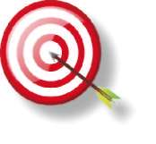
|îiai]aaHîHLEiai]^^^^QnîMg||s|^^H
ÖĞRENME - ÖĞRETME STRATEJİLERİ, DEĞERLENDİRME STRATEJİLERİ
T
HEDEFLER
1. Eğitimde etkin iletişim kurma ve öğretim yöntemlerini kullanma 2. Toplumsal cinsiyet farkı ve eşitliğini kavrama gücü
3. Aile içi şiddetlerin önlenmesinde yasal sorumluluklarını yerine getirme.
4. Uluslar arası ve ulusal alanda aile içi şiddet ile ilgili mevzuatı kavrama gücü
5. Aile içi Şiddetin önlenmesinde polisin uygulayacağı idari görevleri kavrama gücü HEDEF ve DAVRANIŞLAR
1. Eğitimde etkin iletişim kurma ve öğretim yöntemlerini kullanma 1.1. Etkin iletişim kurma yollarını açıklama.
1.2. Yetişkin eğitiminde izlenecek ilkeleri açıklama.
1.3. Öğretim yöntemleri, teknikleri ve stratejilerini açıklama 2. Toplumsal cinsiyet farkı ve eşitliğini kavrama gücü 2.1. Cinsiyet rollerini ve cinsiyet eşitsizliğini açıklama 2.2. Cinsiyete dayalı işbölümlerini açıklama
3. Aile içi şiddetlerin önlenmesinde yasal sorumluluklarını yerine getirme.
3.1. Aile içi şiddet mağduruna yaklaşım ve mağdurla etkili iletişim kurma.
3.2. Aile içi şiddet ile mücadelede mevcut mekanizmayı işletme.
4. Uluslar arası ve ulusal alanda aile içi şiddet ile ilgili mevzuatı kavrama gücü
4.1. Uluslar arası alanda aile içi şiddet ile ilgili mevzuatı açıklama.
4.2. İç hukukta aile içi şiddet ile ilgili mevzuatı açıklama.
5. Aile içi Şiddetin önlenmesinde polisin uygulayacağı idari görevleri kavrama gücü 5.1. Aile içi şiddet olaylarının kanundaki yeri ve soruşturma sürecini anlatma.
5.2. Belli bir durum için yapılacak işlemleri açıklama.
11
HEDEFLER, HEDEF ve DAVRANIŞLAR,
ÖĞRENME - ÖĞRETME STRATEJİLERİ, DEĞERLENDİRME STRATEJİLERİ
T
M ÖĞRENME - ÖĞRETME STRATEJİLERİ
1. Kursa tanışma oyunlarıyla başlanması
2. Kursun ilk gününde konulara başlamadan önce amaç ve hedeflerin açıklanması
3. Teorik ve Uygulamalı derslerde kursiyerlerin sorularına anında cevap verilmesi
4. Her bir bölüm bitiminde bir önceki bölüm ile ilgili soru cevap alınması 5. Her bir bölüm bitiminde mikro-öğretim yapılması
6. Konular ile ilgili sıkça örnek verilmesi
DEĞERLENDİRME STRATEJİLERİ
1. Kurs bitiminde konuları kapsayan yazılı sınav yapılması.
2. Kursiyer etkinliklerinin değerlendirilmesi.
3. Uygulamaların değerledirilmesinde performans ölçeğinin kullanılması.
12
BELİRTKE TABLOSU
O.
DAVRANIŞLAR
\
HEDEFLER
1. BÖLÜM: EĞİTİM İLETİŞİMİ,
YETİŞKİN EĞİTİMİ VE ÖĞRETİM
X
YÖNTEMLERİ
2. BÖLÜM: KADIN-ERKEK
EŞİTLİĞİ VE TOPLUMSAL
X
CİNSİYET
3. BÖLÜM: ŞİDDET BİLGİSİ VE
X
X
İŞBİRLİĞİ
4. BÖLÜM: ULUSLARARASI
HUKUKTA VE İÇ HUKUKTA
X
X
KADINA YÖNELİK AİLE İÇİ
ŞİDDET
5. BÖLÜM: KADINA
YÖNELİK ŞİDDETİN
ÖNLENMESİNDE POLİSİN
X
ROLÜ VE UYGULANACAK
PROSEDÜRLER
13
HEDEFLER, HEDEF ve DAVRANIŞLAR,
ÖĞRENME - ÖĞRETME STRATEJİLERİ, DEĞERLENDİRME STRATEJİLERİ
T
KURS PROGRAMI
DERS
PAZARTESİ
SALI
ÇARŞAMBA
PERŞEMBE
CUMA
SAATİ
09.30-
Açılış Tanışma
Toplumsal
Aile içi şiddet ve
Adli İşlemler
Mikroöğretim
10.15
Kadına karşı şidcinsiyet
kadına yönelik
(CMK ve diğer
detin önlenme
şiddet, kadın kumevzuata göre
sinde polisin rolü
ruluşlarının polisle
adli İşlemler)
ve uygulanacak
İşbirliği
prosedürler
eğitimi”nin eğitici
eğitimine kadarki
kısa tarihçesi,
amaç ve hedef-
leri, kapsam ve
içeriği
10.30-
Eğitim İletişimi,
Toplumsal
Ulusal ve uluslara
Adli İşlemler
Beyin fırtınası
11.15
yetişkin eğitimi,
cinsiyet
rası yasal düzenle
(CMK ve diğer
öğretim yöntemmeler, haklar: TCK, mevzuata göre
leri.
4320 sayı lı Kanun
adli İşlemler)
ve uluslararası
sözleşmeler
11.30-
Eğitim İletişimi,
Toplumsal
Ulusal ve uluslara
Adli İşlemler
Eğitimin değer12.15
yetişkin eğitimi,
cinsiyet
rası yasal düzenle
(CMK ve diğer
lendirilmesi
öğretim yöntemmeler, haklar: TCK, mevzuata göre
leri.
4320 sayı lı Kanun
adli İşlemler)
ve uluslararası
sözleşmeler
ÖĞLE YEMEĞİ
13.30-
Eğitim İletişimi,
Aile içi
Ulusal ve uluslara
İdari İşlemler
Sertifika töreni
14.15
yetişkin eğitimi,
şiddet ve rası yasal düzenle (Kayıt formu, risk
öğretim yöntemkadına
meler, haklar: TCK, değerlendirme,
leri.
yönelik şid4320 sayılı Kanun
müracaatçıyı
det, kadın
ve uluslararası
ve SHÇEK’i bilgikuruluşlarısözleşmeler
lendirme, kamu
nın polisle
ve sivil toplum
İşbirliği
kuruluşlarıyla
işbirliği)
14.30-
Eğitim İletişimi,
Aile içi
Mikroöğ retim
İdari İşlemler
15.15
yetişkin eğitimi,
şiddet ve
(Kayıt formu, risk
öğretim yöntemkadına
değerlendirme,
leri.
yönelik şidmüracaatçıyı
det, kadın
ve SHÇEK’i bilgikuruluşlarılendirme, kamu
nın polisle
ve sivil toplum
İşbirliği
kuruluşlarıyla
işbirliği)
15.30-
Eğitim İletişimi,
Aile içi
Mikroöğ retim
İdari İşlemler
16.15
yetişkin eğitimi,
şiddet ve
(Kayıt formu, risk
öğretim yöntemkadına
değerlendirme,
leri.
yönelik şidmüracaatçıyı
det, kadın
ve SHÇEK’i bilgikuruluşlarılendirme, kamu
nın polisle
ve sivil toplum
İşbirliği
kuruluşlarıyla
işbirliği)
14
SÜRE
27 Ders saati
ÖĞRETİM TEKNİKLERİ
Sunuş, buluş ve uygulama yoluyla öğretme
G
ARAÇ - GEREÇLER
Projeksiyon, Flip-Chart, Renkli Yapışkan Kağıtlar (Yeşil, Kahverengi), Bilgisayar, Ses sistemi, Video-Kamera
BAŞVURU KAYNAKLARI
İlgili kanun veyönetmelikler, kaynakça
âft
ETKİNLİKLER
Tanışma oyunları, örnek olay tartışmaları
15
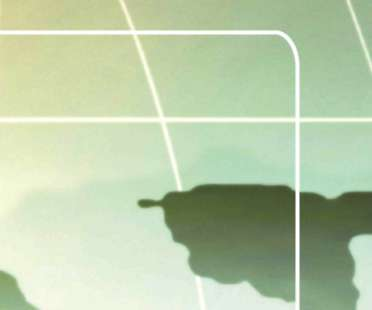
VE Ö Ğ RET İ M YÖNTEMLER İ
pı BÖLÜM
E Ğ
E i
ĞİTİM İLETİŞİMİ, YETİŞKİN EĞİTİMİ
VE ÖĞRETİM YÖNTEMLERİ
L
1. Giriş
2. Eğitim İletişimi
3. Yetişkin Eğitimi
4. Öğretim Yöntemleri,Teknikleri ve Stratejileri J ^ '


BÖLÜM
EĞİTİM İLETİŞİMİ, YETİŞKİN EĞİTİMİ VE ÖĞRETİM YÖNTEMLERİ
1. BÖLÜM: EĞİTİM İLETİŞİMİ, YETİŞKİN EĞİTİMİ VE ÖĞRETİM YÖNTEMLERİ
1. Giriş
En genel anlamı ile iletişim, anlamların ortak hale getirilmesi sürecidir.
Kaynağın ilettiği anlam (bilgi, beceri ve değer) ile alıcının algıladığı anlam ne kadar ortak hale gelirse iletişim o kadar sağlanmış olur. Öğrencilik yaşamı-nızda karşılaştığınız “iyi öğretmen” ve “kötü öğretmen” olarak nitelediğiniz iki öğretmeninizi hatırlayın. İyi öğretmen olarak nitelediğiniz öğretmenin, öğrencileri ile iletişimler kuran, kötü öğretmen dediğinizin de iletişim kuramayan biri olduğunu görürsünüz. İletişim kuranlar, öğrenenin anlayabileceği dili kullanırlar.
KAYNAK
MESAJ
KANAL
ALICI
DÖNÜT
Kaynak : İletişim sürecini başlatan kişi.
Mesaj : Kaynaktan alıcıya gönderilen uyarılar.
Kanal : Mesajın alıcıya iletilmesini sağlayan araç, yöntem ve teknikler.
Alıcı : Gönderilen mesaja hedef olan kişi.
Dönüt : Alıcının kaynak tarafından gönderilen uyarıcıya verdiği tepki (Ergin, 1995, s. 45-46; Ergin ve Birol, 2000, s. 26-27), 2. Eğitim İletişimi
Mesajın Düzenlenmesi
Her iletişim bir mesajla başlar. Mesaj başkalarına iletilmek istenen bilgi, duygu ya da beceriler dizisidir. Bunlar uygun bir biçimde sıralanarak uyumlu bir mesaj haline getirilir. Her mesaj bilişsel bir boyuta (bir tür bilgi), duyuşsal bir boyuta (duyguların ifadesi) ve psikomotor bir boyuta (beceriler) sahiptir. Bir mesaj bu boyutların birine sahip olduğu gibi ikisine, üçüne de sahip olabilir.
Mesajı İşleme ve Geçiş
Mesajın içeriğini oluşturan fikirlerin birbiri ile uyumlu olarak sıraya konduktan sonra sözel ya da görsel bir hale getirilmesidir. Kaynak, mesajını geçirmek için sözel, görsel, dokunma vb. yollardan birini ya da bunların bileşimini seçer.
Geçiş sürecinde duyuşsal boyut da önemlidir.
Mesajın coşkuyla ya da coşkusuz sunuluşu mesajın geçişini etkiler. Mesajı canlı ve enerjik sunabilen öğreticiler, öğrenenlerin ilgisini çekebildikleri için daha başarılı olurlar.
Sözel İletişim: Konuşma, doğrudan ve dolaylı konuşma olarak ikiye ayrılır.
17


ĞİTİM İLETİŞİMİ, YETİŞKİN EĞİTİMİ VE ÖĞRETİM YÖNTEMLERİ
Çelişki içermeyen, açık konuşmalar doğrudan konuşmalardır. İçinde gizli bir anlam taşıyan (şaka, espri gibi) konuşmalar ise dolaylı konuşmalardır.
Sözsüz İletişim: İletişimde iletişim kurulan yerin, hareketin beden ve yüz hareketlerinin kullanılmasıdır. Öğretimde sözel iletişime ek olarak sözel olmayan iletişimin de kullanılması anlamları ortak kılmada çok önemlidir.
İletişimde dört tür alandan söz edilir:
(i) Kişisel alan; her insanın çevresindeki aşağı yukarı bir metrelik alandır.
Buna özel alan da denebilir.
(ii) Karşılıklı konuşma alanı; kişiler arası bir iki metre uzaklık olan karşılıklı konuşma alanıdır.
(iii) Sosyal alan; küçük grup ilişkilerindeki üst sınırı on metre olan alandır.
(iv) Kamu alanı; büyük gruplarla iletişim kurulan geniş alandır.
Öğreticiler kurdukları sınıf içi iletişimde sohbet alanını ve sosyal alanı kullanırlar. Alanı kullanma konusunda öğretmenler dershaneye girmeden önce kendi kendilerine aşağıdaki soruları sormalıdırlar:
Öğrenenler beni görecek mi?
Öğrenenler beni duyacak mı?
Anlaşılabilecek miyim?
İlginç miyim?
Yeterince güdülenmiş miyim?
Öğretenlerin bu sorulara olumlu yanıtlar alarak derse girmeleri iyi iletişim kurabilmeleri için işlerini kolaylaştıracaktır. Vücut dili mesajın anlamını verebilmek için elin, kolun, bedenin duruşunun, hareketlerinin, başın duruşunun, hareketlerinin ve yüz ifadelerinin kullanılmasıdır.
Etkili öğreticiler mesajlarını iletirken bir yerde sabit durmazlar, hareket ederler vücutları ders boyunca hareketsiz değil, eğilir kalkar durumdadır. Bu hareketlerin, mesajın anlamını destekleyen hareketler olması önemlidir. Öğrenenin algılamasını kolaylaştırdığı ölçüde yararlıdır. Göz bağıntısı da önemli bir vücut dilidir. Vücut dilinde kullanılan hareketler toplumların kültürlerinde farklı anlamlar taşır. Bazı toplumlarda göz bağıntısı çok önerilen davranış de
ğil ise de, göz yoluyla çok uzun mesajların kısa sürede iletildiği bilinmektedir.
Göz bağıntısı öğrenene önem verildiğini, söylenenlerin doğru olup olmadığını, yapılan hareketin onaylanıp onaylanmadığını vurgular. Öğrenenden gözünü kaçıran öğreticiler onlarla iletişim kuramazlar. Göz bağıntısının süresi mesaj iletmede önemlidir. Kısa göz bağıntısı yararlı olabildiği gibi uzun göz bağıntısı olumsuz anlamlar iletebilir.
Mesajı Anlamlandırma ve Yorumlama
Kodlanan mesajlardan bir anlam çıkarılır ve diğer kaynaklardan alınan bilgi ile mesaj ilişkilendirilir.
Mesaj alıcının anlamlandırması ve yorumlaması ile şekillenir.
18

BÖLÜM
EĞİTİM İLETİŞİMİ, YETİŞKİN EĞİTİMİ VE ÖĞRETİM YÖNTEMLERİ
Dönüt ve Değerlendirme
Dönüt iletişimin son basamağıdır ve genel anlamda kaynağa cevap verme olarak belirtilebilir. Alıcı cevap verme sürecinde, tıpkı kaynağın yaptığı gibi sözel ve sözel olmayan mesajlardan yararlanabilir. Verilen dönüt çoğu zaman değerlendirmeyi de içerir. Yani alıcı kendisine gönderilen mesajın değerini yargılar. Etkin öğreticiler öğrenenleri dönüt verme konusunda yüreklendirir.
Böylece öğrenenden gelen dönütlerin niteliğine bakarak dersinin niteliği ile ilgili bilgilenir ve dersin devamını öğrenenlerin gereksinimlerine göre düzenleyebilir.
Öğrenenler öğretene bazen doğrudan bazen de dolaylı dönüt verirler. Örneğin, öğretenin sözünü onaylayan biçimde baş hareketleri yaparlar, anlamamış
gibi bakarlar, anlamış gibi bakarlar ya da gözlerini kaçırırlar. Burada önemli olan öğretenin öğrenenin verdiği bu mesajları doğru olarak anlamasıdır. İletişim becerileri gelişmiş öğreticiler sürekli olarak öğrenenleri gözlemler, onlardan gelen doğrudan ve dolaylı dönütleri değerlendirir. İletişim sürecinin sağlıklı sürdürülebilmesi iletişim becerilerinin geliştirilmesi ile bağıntılıdır.
Sınıf İçi İletişimin Özellikleri
Her sınıfta bir iletişim örüntüsü vardır. Bu iletişimin niteliği sınıfta sosyal grupların oluşumunu da etkiler. Sınıftaki alt gruplar birbirleri ile güçlü ya da zayıf bir iletişim süreci içinde olabilirler. Öğretene bu konuda düşen rol, öğretim süreci içinde sağlıklı bir iletişim ortamı sağlamak, sürdürülmesi konusunda da öğrenenleri yüreklendirmektir.
Sınıf içi iletişim dinamiği çok değişik faktörlerden etkilenir. Öğrenenlerin farklı yapıdaki ailelerden gelmiş olması, hazır bulunuşluk düzeylerindeki farklılıklar, bireysel özelliklerinden kaynaklanan öğrenme güçlükleri, ilgileri, gereksinimleri, programdan ve dersten beklentileri, yetenekleri, öğrenme biçimleri ve daha birçok faktör sınıf içi iletişimin etkileyicileridir. Birebir iletişim kurma ile sınıf içi iletişim birbirinden farklıdır. Öğreten, sınıf içi iletişimde grup lideri olmalı ve sınıf içi iletişimi (müdahale ederek değil ama) bir anlamda kontrolü altında tutmalıdır. Çünkü sınıf ortamı eğitimin belirlenmiş hedefleri doğrultusunda bireyler yetiştirmek amacıyla oluşturulmuştur.
Öğretenin sınıfta iletişim liderliği yapabilmesi, onun üst düzeyde bilişsel problem çözme yeteneği ile donanmış olmasına bağlıdır.
İletişim İçin Sesin Kullanılması
Sınıf ortamı ne kadar samimi olursa olsun sonuçta sınıf içi iletişim resmi bir iletişimdir. Sınıflar dostlukları geliştirmek amacıyla değil, öğretim programının işaret ettiği hedefleri öğrenen davranışlarına dönüştürmek amacıyla oluşturulmuştur. Sınıflarda zaman zaman resmi olmayan ortamlar oluşsa da öğretenin rolü programı uygulamaktır. S ınıftaki mesaj akışını kontrol etmek önemli ölçüde beceri ve enerji gerektirir. Sınıf içinde oluşturulan mesajların 19


ĞİTİM İLETİŞİMİ, YETİŞKİN EĞİTİMİ VE ÖĞRETİM YÖNTEMLERİ
formüle edilmesi, kodların çözülmesi, dağılımı ve değerlendirilmesi özel bir beceri ve güç harcayarak sağlanabilir. Yazılı, sözlü ya da şekille oluşturulmuş
bütün mesajların sınıf içinde öğrenenler tarafından doğru anlaşılmasından öğretmen sorumludur. Bu sorumluluğun becerili olarak yerine getirilememesi belki de onarılamaz yanlış algılara ve sonucunda hatalı öğrenmelere neden olabilir. İletişimin doyurucu ve anlamlı olması, öğrenenin iletişim sürecine aktif olarak katılması ile gerçekleşir.
Öğretenin iletişim becerilerinin niteliği, sınıftaki kişisel ilişkileri de etkiler. İletişim konusunda yetkin olan öğreticinin öğrenenleri huzurludur, grup dayanışması gelişmiştir. Bu tür öğretmenler sınıf içi etkileşimleri iyi yönetebilirler. İyi kurulmuş
bir iletişim sonunda ancak “arkadaşça” bir sınıf atmosferi oluşturulabilir.
YAPILACAKLAR
YAPILMAYACAKLAR
^ Ne söylemeniz gerektiği konu-
^ Resmiyet ve lafa boğma.
sunda düşünün, bunu dile getir-
^ Monoton bir ses tonu kullanma.
mek için uygun bir yol bulun ve
^ Geveleme.
mesajı güvenle iletin. Mesajların
anlamlı boyutlarını vurgulayın.
^ Cümle sonunda sesin azalması.
^ Sesinizi farklı tonlarda ve vurgu
^ Sesin uzun süre kullanılmasını
larda kullanın. Bu değişiklikler
gerektiren yöntemler.
sesinize ilgi çeker.
^ Monolog.
^ Sesinizi sınıftaki bütün öğrenen-
^ Bağırma. Sınıfın ilgisini çekmek
lerin duymasını sağlayın. Boğa-
için sürekli yüksek ses kullanma
zınızın temiz ve rahat olmasına
(Alçak ses daha etkilidir.)
özen gösterin.
^ Uzun süre konuşma.
^ Dikkatli konuşun.
^ Sigara içme. Konuşurken boğazı
^ Kısa aralarla sesinizi dinlendirin.
temizleme (İhtiyaç duyuyorsanız
Sözel olmayan iletişim kullanın.
su içebilirsiniz.)
^ Sesinizde iniş çıkışlar yaparak
^ Kişisel gerginliklere yol açacak
farklı etkiler yaratın.
durumlar (Bunlar ses üzerinde
^ Kurduğunuz iletişim ekonomik
olumsuz etki yapar.)
olsun. Örneğin: Gruba anlatacak-
^ Bütün mesajlar için bütün so-
larınızı yanlarına giderek yapın,
rumluluğu üzerinize alma.
uzaktan konuşmayın.
^ Sesinizi zarar vericilerden koruyun.
^ Öğrenenlerle konuşurken rahat
olun. İletişimden zevk alın.
^ Öğrenenlerin sınıf iletişimine sözel
Kaynak: Cole ve Chan,1994, s. 51-52.
katkıda bulunmalarını sağlayın.
Öğretenler dikkat ve çaba gerektiren öğrenme ortamlarında sınıf atmosferinin ciddi olması gerektiğini bilirler. Ancak aşırı ciddi sınıf atmosferi öğrene-20


BÖLÜM
EĞİTİM İLETİŞİMİ, YETİŞKİN EĞİTİMİ VE ÖĞRETİM YÖNTEMLERİ
nin kaygı düzeyini yükseltir. Zaman zaman sınıfta yapılan espriler öğrenenlerin kaygılarını ortadan kaldıracaktır.
Nerede ciddi olunacağını, nerede espriye yer verileceğini öğretenin iletişim becerisi belirler. İletişim becerisine sahip öğretmenler mesajlarına duygu katarlar ve sıcak mesajlar verirler.
Öğrenenlere dostça davranırlar. Düşmanlık kokan bir sınıfta iletişimsizliğe düşme olasılığı yüksektir. Arkadaşça olmak demek gevşek ve ilkesiz olmak demek değildir. Bir öğreten hem arkadaşça, hem de ilkeli olabilir. Öğrenenler kendilerine saygı duyan öğreticilere değer verirler.
Bağırma, otorite kurmada hiçbir olumlu etki sağlamadığı gibi aynı zamanda iletişimi engelleyen, öğrenen ile öğreten arasına mesafe koyan kötü bir öğretmen davranışıdır.
Kişilerarası İletişimin Engelleyicileri
Bolton (1979) sınıf ortamında kişilerarası iletişimin engellerinin kızgınlığa, öfkeye, başkalarına bağımlı olmaya neden olduğunu belirterek öğretenlerin dikkatli olması gerektiğini vurgulamaktadır. Kişilerarası iletişimin engelleri;
^ Eleştiri: Başkalarının sözlerinin, davranışlarının birileri tarafından olumsuz olarak yargılanması iletişimi engeller.
^ Kişilere kendi adının dışında adla hitap etme/ad takma.
^ Olumsuz bir davranışın altında yatan gizli nedenleri merak edip araştırma.
^ Birilerini yönetmek için yersiz, yanlış övgü ya da ödül kullanma.
^ Birilerinin belli davranışları yapmaları için onlara emir verme.
^ Kişi/kişiler uygun davranışlarda bulunmazsa ceza verileceğini belirtme, tehdit etme.
^ Başkalarının sorunlarını çözmeye gönüllü olma.
^ Birilerine sürekli olarak soru sorma, onlar bilgi vermek istemese bile cevap istemede ısrar etme.
^ Birilerine sürekli akıl verme, öğüt verme.
^ Konuyu saptırma.
^ Başkalarının duygularına aldırmadan sürekli akılcı yollar önerme.
^ Uygunsuz hareketlere duygusal destek ve aşırı güven verme.
İletişimi Engelleyen Diğer Faktörler
^ Mahalli dil kullanma: Yalnızca bir yörede kullanılan bazen de farklı yörelerde başka anlamlara gelen sözcükler vardır. Bu sözcükler mesajlarda kullanılırsa alıcı için hiçbir anlam taşımaz.
^ Deyimler: Deyimler bir dilin zenginliğidir. Ancak anlamı alıcı tarafından bilinmeyen deyimlerin
^ kullanılması iletişimi engeller.
21


ĞİTİM İLETİŞİMİ, YETİŞKİN EĞİTİMİ VE ÖĞRETİM YÖNTEMLERİ
^ Anlamı bilinmeyen ya da farklı toplumlarda farklı anlamlara gelen sözsüz iletişim unsurları:
^ Bazı el, parmak, baş, göz ve beden hareketleri bazı toplumlarda farklı anlamlar taşır. Anlamı hem kaynak hem de alıcı tarafından aynı olarak bilinmeyen sözel olmayan iletişim unsurları, iletişimi sağlamak bir yana iletişime engeldir.
^ Yabancı sözcükler kullanma: Bazı insanlar doğu ya da batı dillerinden sözcükler kullanmaya meraklıdırlar. Alıcıların anlamını bilmediği bu sözcükler anlaşılamayacak ve iletişim engellenecektir.
^ Fiziksel ya da ruhsal rahatsızlıklar: Kaynağın ya da alıcının fiziksel ya da ruhsal bir rahatsızlığının olması, mesajın kaynaktan alıcıya iletilmesinin ve dönüt olarak yeniden kaynağa ulaştırılmasının önünde engeldir.
^ Dersin günü ve saati: Pazartesi sabah, Cuma öğleden sonra gibi insan enerjisinin düşüş gösterdiği
^ iddia edilen gün ve saatlerde yapılan derslerde iletişim kurmak için ileti
şim becerileri ile donatılmış öğretmenlere gerek duyulur. Çok yorucu bir günün son saatinde ders yapmak da iletişime engeldir.
^ Uygunsuz sınıf ortamı: Sınıfın çok sıcak, çok soğuk, çok aydınlık, karanlık, gürültülü ya da ders materyallerini görmeyi zorlaştıran biçimde yerleştirilmiş olması iletişimi engeller.
^ Tatil öncesi ve sonrası: Dersin tatilin hemen öncesine ya da tatilin hemen arkasına gelmesi durumunda öğrenenler dikkatlerini toplamada zorluk çekebilirler. Dolayısıyla iletişim kurmak güçleşir.
^ Konuşma bozuklukları: Öğreten ya da iletişim sürecine katılan öğrenenin ne konuşulduğundan çok, nasıl konuşulduğuna dikkat çekecek bir konuşma bozukluğunun olması da iletişimi engeller.
^ Görsel unsurlardan yararlanmama: Öğretenin anlamı kolaylaştıracak öğretim materyallerinden yararlanmayı tercih etmeyip yalnızca sözel sunumu tercih etmesi de iletişimi engeller. Görsel unsurlar hem dikkat çeker, hem doğru ve çabuk algılanır.
^ Sözcüklere boğma: Bazı insanlar konuşur konuşur sonra “ne dedi?”
diye kendi kendinize sorarsınız.
^ Hiçbir şey demediklerini düşünürsünüz. İşte bu çok konuşup hiçbir şey anlatmayan kişiler anlatımı sözcüklere boğar. Böylece iletişim sağlanamaz.
^ Sözsüz iletişim unsurlarının çok fazla kullanılması: Aşırı beden, el, kol hareketleri, jestler ve mimikler dikkat dağıtıcı resim ve görüntüler öğrenenin sunulandan başka yerlere odaklanmasına neden olur ve iletişim başlamaz. Sözsüz unsurlar mesajın gücünü destekleyecek miktarda olduğu zaman iletişimde yarar getirir.
^ Hayal kurma: Bazı öğrenenler hayal kurmaya çok yatkındırlar. Sözlü ya 22


BÖLÜM
EĞİTİM İLETİŞİMİ, YETİŞKİN EĞİTİMİ VE ÖĞRETİM YÖNTEMLERİ
da sözsüz bir uyaran bu tip öğrenenleri ders dışında bir hayale götürebilir. Verilen mesajları almaya dönük kanalları kapanır ve iletişim sağlanamaz. Öğretene düşen, sınıfında hayal kurmayı seven öğrenenlerin bulunmasının doğal olduğunu bilerek bunları derse çekmeye yarayan ilginç uyaranlar kullanmaktır.
^ Algılayamama: Algılayamama da bir iletişim engelidir. Her öğrenenin algılama düzeyi aynı değildir. Bazı öğrenenler bazı konuları algılamada zorlanabilir. Öğretmenin sorumluluğu, algılama zorluğu içinde olan öğrenenlerin anlayabileceği düzeyde ve çeşitlilikte mesajlar düzenlemektir.
^ Göz bağıntısı eksikliği: Öğretenin ders boyunca bir projektör gibi sınıfını taraması ve öğrenenleri ile anlamlı göz bağıntısı kurması gerekir. Göz bağıntısı eksikliği öğrenenin ilgisini ve dikkatini dağıtır. Böylece gönderilen mesajlar alıcıya ulaşmaz.
^ Öğretenin isteksizliği: Öğreten öğrettiği konuyu, öğrenenlerini ve birilerine bir şeyler öğretmeyi sevmiyorsa, coşkusuz ve heyecansız ise bu durgunluk öğrenene de yansır. Mesaj yalnızca bilgi içermez. Mesajı iletenin duygularını da taşır. Duygusuz mesaj alıcı tarafından zor algılanır.
^ Güdülenme eksikliği: Öğrenen öğreneceklerinin nerede işine yarayaca-ğını bilmiyorsa bir süre sonra mesajlar alınmamaya başlar.
^ Öğrenenin hazırbulunuşluğunun yetersizliği: Öğrenen öğretilenleri öğ-renebilmek için bilmesi gereken temel bilgi, beceri ve değerlere sahip değil ise üst düzey öğrenmeler gerçekleşmeyecektir. Öğretimin öğrenenin hazırbulunuşluğuna göre düzenlenmemesi, iletişimin sağlanmama-sı anlamına gelir.
sözel ve görsel
Â
soyut
i A
semboller
hareketsiz resim, ses ^^-
sembolik
film, televizyon -^
sergi •^-
etkin
gezi -^
gösteri - < -
dramatize ^
etkinlik
düzenlenmiş ^
etkinlik
direkt -^
deneyimler
Dale’in Yaşantı Konisi
23


ĞİTİM İLETİŞİMİ, YETİŞKİN EĞİTİMİ VE ÖĞRETİM YÖNTEMLERİ
Yukarıda sıralanan iletişim engellerinin bazıları öğrenenden, bazıları öğretenden bazıları da fiziksel çevre ve durumlardan kaynaklanmaktadır. Öğreten bu engelleri ve nedenlerini bilmeli ve olanakları ölçüsünde bu engelleri ortadan kaldırma yollarını kullanmalıdır.
İletişim Kurma Sürecinde Öğretenlere Öneriler
1. Katılımcıların kişisel özellikleri ve hazırbulunuşlukları hakkında bilgi edinin. Öğreten öğrenenlerinin becerilerini, ilgilerini ve tutumlarını bilirse onlarla daha doyurucu iletişim kurabilir. Katılımcılar öğretenlerinin EĞİTİCİLERE
ÖNERİLER
bu duyarlılığını fark ettiklerinde öğretene olumlu yanıt verirler. Öğrenenleri tanıyan öğreten de mesajlarını anlaşılabilir bir dille ifade eder. Zorluk düzeyini katılımcıya göre belirler.
2. Aktif dinleyici olun. Söylenenleri doğru algılayın, yorumlayın ve değerlendirin. Dinlerken sözle ya da beden dili ile dönüt verin. Katılımcılar kendilerini dikkatle dinleyen öğretenlere olumlu yanıt verirler.
3. Sınıfta rahat bir iletişim biçimi geliştirin. Oluşturduğunuz sınıf atmosferi güvenli olsun. İletişimde istekli ve kolayca gülümseyen öğretenlere öğrenenler olumlu yanıt verirler. Öğretenin sinirli, gergin, tedirgin ve öfkeli olması öğrenende isteksizlik yaratır.
4. Öğrenenlere sunacağınız bilgilerin öğrenenin ilgisini çekmesini sağlayın. İlgi duymadıkları ve zor bilgiler öğrenende kaygı yaratır. Ö ğrenme zorluğundan kaynaklanan kaygı düzeyini düşürmek için önlemler almak öğretenin sorumluluğu kapsamındadır. Örneğin: Anahtar kavramları açıklama, açık yönergeler verme, bilgiyi kolaydan zora sıralama, birbiri ile ilintili mesajlar verme, öğrenenin anlamını bilmediği sözcükler kullanmaktan sakınma vb. sayılabilir.
5. Mesajlarınızı sunarken farklı iletişim kanallarından yararlanın. Farklı sunuş biçimleri öğrenenin ilgisini arttırır. Sunulanlar öğrenenin ne kadar çok sayıda duyusuna hitap ederse iletişim ve bağlı olarak öğrenme o kadar başarılı olur.
Öğrendiklerimizin
% 20’sini işiterek
% 30’unu görerek
% 50’sini görerek ve işiterek
% 70’ini görerek, işiterek ve ifade ederek
% 90’ını görerek, işiterek, ifade ederek ve yaparak öğreniriz.
6. Mesajlardaki anlamı güçlendirmek üzere ses tonlamaları yaparak vurgulamalar kullanın. Gerektiğinde animasyonlara yer verin. Böylece hem dikkat çekecek, hem de vurgulu konuşmalarınızla öğrenenlerinize örnek olacaksınız.
24


BÖLÜM
EĞİTİM İLETİŞİMİ, YETİŞKİN EĞİTİMİ VE ÖĞRETİM YÖNTEMLERİ
7. Sesiniz sınıfın her yerinden duyulsun. Öğrenenler sesi bütün sınıfta du-yulabilen öğretenden yararlanır. Mesleği sürdürürken sesi kullanmanın öneminden hareketle öğretenlerin sesle ilgili organlarının sağlığına dikkat etmeleri gerekir.
8. Dersin anahtar noktalarını tekrarlayın. Sunduklarınızın ayrıntılar arasında kaybolmasını engellemek üzere konunun ana hatlarını tekrarlayarak özetleyin ya da anahtar noktaları öğrenenlere buldurmak için uygun yollar deneyin.
9. Sözel olmayan iletişimi geliştirin. İletişim becerisi gelişmiş öğretenler sözel mesajları desteklemek için sözel olmayan mesajlar da kullanırlar ve kullanma biçimlerini değerlendirir, geliştirirler. Sözlerini beden hareketleri ve dramalarla destekleyen öğretenler öğrenenlerin ilgisini çekmeyi başarırlar.
10. Öğrenenlerle göz bağıntısı kurun. Kendisi ile göz bağıntısı kuran ve bunu sürdüren öğretenlere öğrenenler daha iyi yanıtlar verir. Anlamlı göz bağıntısı, iletişim sürecinin psikolojik boyutunu destekler. Anlamlı göz bağıntısı kurabilen öğretenler hiçbir sözel mesaj kullanmadan da öğrenenlerine birçok şeyi anlatabilirler. “Dinle, önüne dön, beni anlıyorsun, anlaşılmadı galiba, konuşmak istiyorsun, bekle sözümü bitireyim, konuşabilirsin, konuşma!” ve daha birçok sözcük, söylenmeden bakış-larla öğreten ve öğrenen arasında anlaşılır. Göz bağıntısı kuramayan, duvarlara ya da uzaklara bakan öğretenlerin etkili iletişim kurabildikleri söylenemez.
1 1 . Katılımcılara adıyla hitap edin. Öğrenenin adını öğrenmek ve ona adıyla seslenmek öğrenen ve öğreteni yakınlaştırır ve öğrenenin kendine güvenini artırır. Katılımcılara adı ile hitabetmek için yaka kartı, masa üzerine isimlik gibi yolları kullanabilirsiniz. Öğretenin öğrenene isimle seslenmemesi durumunda öğrenen sıradanlaşır ve sorumluluk almaktan kaçınır.
12. İletişim biçiminizle ilgili öğrenen tepkilerini değerlendirin. Öğrenenler mesajlarınıza uygun yanıtlar vermiyorsa mesajınızı iyi formüle edip etmediğinizi ve mesajı iletmede kullandığınız kanalı irdeleyin. Mesajlarınızı farklı formüle etmeyi ve farklı kanallar kullanmayı deneyin. Etkili öğretenler öğrenenlerden sürekli dönüt alırlar ve dönütler doğrultusunda mesaj biçimlerini geliştirirler.
13. İletişim sürecinin tümünde baskın olmaya çalışmayın. Sınıf ortamında öğrenenlere fikirlerini ve değerlerini paylaşma fırsatı verilmelidir.
Öğrenenlerin bu fırsatı kullanmaları için yüreklendirilmesi gerekir. İletişim becerisine sahip bir öğreten kaynak rolünden alıcı rolüne kolaylıkla geçebilir. Öğrenen katkılarına olumlu pekiştireçler kullanılarak bu katılımın sürdürülmesi sağlanmalıdır. Etkili öğreticiler öğrenenlerinin söyle-25
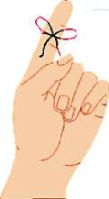

ĞİTİM İLETİŞİMİ, YETİŞKİN EĞİTİMİ VE ÖĞRETİM YÖNTEMLERİ
diklerini dikkatle dinler ve öğrenenden gelen mesajlara uygun tepkiler verirler. Aşağıda öğretenlerin dinleme becerilerini geliştirebilmeleri için bazı öneriler sunulmuştur.
Etkili Dinleme
1. Konuşmayı durdurun. Öğretenler genelde çok konuşur. Öğrencilerin konuşması için onlara süre verin ve ne dediklerini dikkatle dinleyin.
2. Öğrenenleri rahatlatın. Öğrenenlere düşün celerine saygı gösterdiğinizi belli edin. Onların yo rumlarını ve önerilerini hoş karşıla-yın.
3. Uygun tepkiler verin. Öğrenenler derse katıl dığında onlara olumlu dönütler verin.
4. Öğrenenin söyledikleri üzerinde yoğunlaşın. Öğrenen konuşurken yalnızca söylediklerini dinleyin. İyi dinlediğinizde ne söyledi-ğini daha iyi anlayacaksınız.
5. İlginizin dağılmamasına özen gösterin. Öğre nenin verdiği önemli mesajı alırken ilginizin dağıl maması için başkalarının konuşmasına izin verme yin.Yalnızca konuşana odaklanın.
6. Tahminler yapmaktan kaçının. Öğrenenin size söyleyeceklerini zaten bildiğinizi düşünmeyin. Böyle yaptığınızda onların ilginç ve kendilerine özgü yorumları olduğunu göreceksiniz ve şaşıra-caksınız.
7 . D ü şünsel olarak tartışmayın. Öğrenenlerin görüşlerine ve düşünce biçimlerine karşı çıkmayın. Düşüncelerine ilişkin olumlu ve destekleyici tutumlar geliştirin.
8. Ana noktalar için dinleyin. Öğrenenlerin söy lediklerini ayrıntılardan ayıklayarak ana noktaları bulun. Örtük ve derin mesajları yakalamaya çalışın.
9. Sorumlulukları paylaşın. Sınıf içi iletişimde bü tün sorumluluğu üstlenmeyin. Dersin bazı boyut larında öğrenenlerin sunum yapmalarına izin verin. Onlara orijinal sunumlar yapma fırsatı tanıyın.
10. Sorular sorun. Soracağınız uygun sorular öğrenenlerinizin sözel yanıtlar geliştirmesini sağlar.
11. Aktif dinlemeyi kullanın. Yeri geldiğinde size söylenen bazı sözcükleri tekrar edin ya da yanıt verin. Bu aktif etkileşim öğreneni dinlediğinizi gös terecek ve öğrenenle aranızda etkin bir iletişim kurulmuş olacaktır.
Kaynak: Holt, Rinehart ve Winston, Karşılıklı Oyun Kişilerarası İletişim Süreci’
nden yararlanılarak uyarlan mıştır. (Adler, R.B., Rosenfeld, L.B. veTowne, N.
1983 - içinde).
26


BÖLÜM
EĞİTİM İLETİŞİMİ, YETİŞKİN EĞİTİMİ VE ÖĞRETİM YÖNTEMLERİ
Sınıf İçi İletişimde Uygun Olmayan Rol Modelleri
Bazı öğretenler iletişim ilkeleri ile çelişen davranışlar gösterirler.
(1) Sunan Öğreten
Bu modeli benimseyen öğretenler sınıf içi rollerini konuyu öğrencilere sözel olarak anlatmakla sınırlandırırlar. Konunun gerektirdiği doğru mesajları oluşturur ve öğrenene yönlendirirler. Öğrenenden gelecek dönüt onları ilgilendirmez. Sınıf içi iletişim karşılıklı etkileşime dayanmaz. Zaman zaman sorular sorulur ve yanıtlanır. Öğrenenler uzun süre oturarak yalnızca dinledikleri için bir süre sonra sıkılırlar ve öğretenin anlattıkları da iyi anlaşılmaz.
(2) Etkisiz Öğreten
Bu rol modelindeki öğretenler genellikle konuları açıklamada öğrenenin anlayacağı uygun dili bulamazlar. Teknik dil kullanırlar. Açıklama ve uygun örnekler vermede tıkanırlar. Seçilen örnekler de ya öğrencinin anlayamayacağı kadar zor, soyut ya da uygunsuzdur.
(3) Hızlı ya da Yavaş Mesaj Veren Öğreten
Bu rol modelindeki öğretenler öyle hızlı ya da yavaş mesaj verirler ki öğrenenlerin mesajı izleme ve anlama şansı yoktur ya da dikkatini toplayamaz.
Öğrenen mesajı izleyemediği için mesajın mantığını da kavrayamaz. Sunu yaparken aceleci davranan öğretenler genellikle konuyla ilgili bilgi eksikliklerini gizlemek amacı ile bu yolu seçerler. Öğrenenden dönüt almak da onları ilgilendirmez. Zaten öğrenen mesajı izlemede zorlandığı için dönüt vermede de sıkıntı yaşar. Çok ağır tempoda verilen mesajlar da öğreneni hayale sürükler.
(4) Hazırlıksız Öğreten
Hazırlıksız öğretenler sözcüklere boğacak ölçüde uzun sözel açıklamalar yaparlar. Bu kişilerin gelişmiş sözel becerileri vardır, fakat mesajları doğru bilgi ve mantıksal dayanaktan yoksun ya da zayıftır. Dersin konusuyla ilgili hazırlıkları, dersi nasıl vereceklerine ilişkin bir öğretim planları ve derste kullanmaları gereken öğretim materyalleri yoktur. Bu eksiklikleri sözel becerilerini kullanarak deyim yerindeyse laf kalabalığına getirerek derse ayrılan süreyi doldururlar.
(5) Bağıran Öğreten
Bağıran öğretenlerin genellikle ses tonunu kullanmada sorunları vardır ve yüksek ses kullandıkları zaman daha etkili olacaklarını düşünürler. Sınıfta yüksek sesle sürekli bağıran biri öğrenenleri rahatsız eder. Öğretenin söylediklerinin hangilerinin çok önemli, hangilerinin ayrıntı olduğunu fark edemez.
Bir süre sonra da bu bağıran sesi dinlemekten vazgeçer. Bağıran öğretenler sınıf yönetiminde de sorunlar yaşarlar. Unutmamak gerekir ki öğrenenlerin net duyabileceği bir ses tonu ile söylenenler bağırarak söylenenlerden daha uzun süreli etkilidir.
27


ĞİTİM İLETİŞİMİ, YETİŞKİN EĞİTİMİ VE ÖĞRETİM YÖNTEMLERİ
(6) Sunamayan Öğreten
Sunamayan öğretenler mesajları doğrudan ve güçlü olarak iletmede zorluk çekerler. Öğretim konusunda yeterli bilgileri vardır ancak öğrenenlere sunacakları bilgileri ifade etmede becerileri zayıftır. Öğretim stratejilerini kullanmada yetersizdirler. Öğrenenlerin dikkatini çekmede ve sürdürmede, grup önünde sunuş yapmada zorlanırlar. Fikirlerini ifade etmede sözel olmayan iletişim unsurlarını nadiren ve etkisiz kullanırlar.
3. Yetişkin Eğitimi
Yetişkinlerin eğitiminde yararlanılan yöntem ve uygulamalar küçük yaştaki bireyler için yaralanılanlardan farklıdır. Yetişkinin kişiliği gelişmiştir. Kişiliğine saygı gösterilmesi konusunda yetişkinin çok duyarlı olduğu unutulmamalıdır.
Çocuklar daha kolay eğitilebilirler, başarısızlıkları ve uygunsuz hareketleri karşısında yeri geldiğinde rahatça uyarılabilirler. Çocukların kişiliğini geliştirici bir eğitsel çaba söz konusu iken, yetişkinde gelişmiş olan kişiliğin korunmasını, harekete geçirilmesini sağlayıcı bir yaklaşım gereklidir.
Eğitim açısından çocukla yetişkin arasındaki farklar aşağıda sıralanmıştır: a) Çocuğun, öğrenmeye ayıracak zamanı boldur. Yetişkin, çalışma saatleri dışındaki serbest zamanından bir dilimini öğrenmeye ayırır. Çocuk, oyun dışında, öğrenmeye zaman ayırır.
b) Çocuğun yaşantısından edindiği deneyimi pek azdır. Yetişkinin önceki yaşantısından edindiği deneyim öğrenmeyi etkiler.
c) Çocukta, öğrenme konusunda güven duygusu yüksektir. Yetişkinde, öğrenme gücü konusunda, güvensizlik duygusu gelişmiş olabilir. Daha öncesi başarısızlıklar yetişkinin eğitimini sınırlayıcı etkide bulunabilir.
d) Yetişkinde, öğrenme güdüsü önemlidir. Bu güdü yoksa, yetişkin öğrenmeye zorlanamaz. Bu nedenle, bu güdünün yaratılması, öğrenmeye gereksinim duymasının sağlanması daha etkili bir yoldur. Çocuk, öğrenmeye yöneltilirken, sınırlı ölçüde de olsa zorlamaya başvurulabilir.
e) Çocuk ile öğretmen arasındaki ilişki, çocuğun ana-babasıyla ilişkilerini andırır. Ye t işkin eğitiminde katılımcı ile eğitici arasındaki ilişki, arkadaş, meslektaş ilişkisi olmalıdır (Geray, 2000).
f) Çocuklara kazandırılmak istenen hemen her tür değer uygun yöntemler seçilerek öğretilebilir. Oysa yetişkinler hemen her konuda değerler geliştirmişlerdir. Değerlerine söz söylenen ortamlarda kendilerini kapatırlar ya da eğitim konusunun dışına çıkarak çatışmaya girebilirler. Yetişkin eğitiminde onların değerleri ile çelişmemeye özen gösterilmelidir.
Yetişkin Nasıl Bir Eğitim İster?
Yetişkinlerin eğitiminde gözetilecek noktaları belirleyebilmek amacıyla, yetişkinin nasıl bir eğitim istediğini bilmek gerekir. Yetişkinin nasıl bir eğitim istediğini açıklayalım.
28


BÖLÜM
EĞİTİM İLETİŞİMİ, YETİŞKİN EĞİTİMİ VE ÖĞRETİM YÖNTEMLERİ
Ye t i şkin;
a. Gelişiminden öncelikle kendisi sorumluluk duyar. Edinmek istediği eğitimin amaçlarını, kendi bilgi ve gereksinimlerine dayanarak kendisi belirtmelidir. Uzmanlar, yetişkine bu konuda ancak yol göstericilik yapabilirler.
b. Yaşamında başarılı olmaya yarayacak bir öğrenim ister. Gerçek sorunları çözmeye, işine yarayacak yeni amaçlara yönelmeye yardımcı nitelikte bir eğitim edinme eğilimindedir.
c. Hemen ya da yakın gelecekte uygulayabileceği bilgi ve becerileri öğrenmek ister.
d. Öğrenme sürecine etkin bir biçimde katılmak, kendi deneyimine dayalı olarak görüşlerini tartışmak ister.
e. Bilgi, beceri, alışkanlık ve hareketlerini geliştirecek, sorunlarını kendi başına çözebilecek duruma getirecek yöntemleri kazanmak ister.
f. Çevresini tanıma, denetimi altına alma ve ondan zevk alma isteğine ağırlık verir.
Yukarıdaki noktaları dikkate alarak yetişkin eğitiminde; (i) Öğrenme bir soruna yönelik olmalıdır.
(ii) Öğrenme katılanın deneyimine yönelmelidir.
(iii) Deneyim, katılan için anlamlı olmalıdır.
(iv) Eğitimin amacını, katılımcı saptamalıdır.Öğrenci öğretimin yürütülmesine katılmalıdır. (Bu nedenledir ki öğrenci sözü yerine “katılımcı” kavramı kullanılmıştır).
(v) Katılımcı eğitimi değerlendirebilmelidir.
(Geray, 2000).
4. Öğretim Yöntemleri, Teknikleri ve Stratejileri
İlgili Türkçe ve İngilizce kaynaklar incelendiğinde, zaman zaman yöntem, teknik ve strateji kavramlarının birbirinin yerine kullanıldığı görülmektedir.
Demirel (1999b), yöntemi, hedefe ulaşmak için izlenen en kısa yol ya da bir konuyu öğrenmek için seçilen düzenli yol olarak; tekniği, öğretme yöntemini uygulamaya koyma biçimi olarak tanımlamıştır.
Cole ve Chan, (1994, s. 4-5) “Stratejilerin, öğretimin hedeflerine ulaşmasını kolaylaştırmada kullanılan küçük ölçekli planlar” olduğunu söylemiştir.
Demirel bir başka yayınında (2004, s. 70) Jacobsen ve arkadaşlarının (1985, s. 171) bir yayınına atıf yaparak “öğretim yöntemlerini beceriler yakla
şımı ile ele aldıklarını ve ‘yöntem’ teriminden çok ‘öğrenme stratejisi’ terimini kullandıklarını belirtmiştir. Bu stratejileri;
29


ĞİTİM İLETİŞİMİ, YETİŞKİN EĞİTİMİ VE ÖĞRETİM YÖNTEMLERİ
^ Sunuş yoluyla öğrenme,
^ Buluş yoluyla öğrenme,
^ Araştırma ve inceleme yoluyla öğrenme stratejileri olarak değerlendirdiklerini” vurgulamıştır.
Çok sayıda kaynağa ulaşıldığında bu üç kavramın ortak işlevinin öğrenme hedeflerini gerçekleştirmek olduğu görülür. Geniş bir yelpazeye yayılmış öğretim stratejilerinden öğretmen merkezli olanlar ders sunumu, soru sorma ve öğretmen uygulamalarıdır. Bu stratejilerde daha çok öğretmen etkin olarak rol alır. Öğrencinin keşfetmesini, bulmasını isteyen etkileşimli öğretim stratejilerine ise grup çalışmaları, tartışma yöntemleri, proje hazırlama örnek verilebilir.
Öğretmen, öğretim yöntemleri konusunda yetkin olmalı ve sınıfında farklı yöntemlere yer vermelidir.
Çünkü:
a. Her öğrencinin aynı yöntemle öğrenmesi olası değildir.
b. Her yöntem, her öğrencinin ilgisini eşit düzeyde çekmez.
c. Tek bir yöntem, tek başına bütün konulara uygun değildir.
d. Bir öğretim yöntemi, belirlenen bütün hedeflere ulaşmayı sağlamada yeterli değildir.
e Her öğretmen bütün yöntemleri çok becerili kullanamayabilir. Bazı öğretmenler bazı yöntemlere yatkındır.
f. Bazı yöntemler uzun zaman gerektirir.
g. Bazı yöntemler özel fiziksel koşullar gerektirir.
h Bazı yöntemler parasal kaynak gerektirir.
En iyi yöntem, dersin hedeflerine, öğrencinin hazırbulunuşluğuna, öğrenme biçimine, dersin süresine, öğrenci mevcuduna uygun olarak seçilen ve başarılı bir şekilde kullanılan yöntemdir.
Sunular (Anlatım)
Öğretmen olay, olgu ve ilkeleri sözel olarak verir. Öğrenciler öğretmenin sunduklarını not alırlar. Tartışma ya da soru sorma düzeyinde bir katılım yoktur. Bilgilerin kısa sürede gruba sunulması, açıklanması, öğrencilerin öğrenme isteklerinin yönlendirilmesi sağlanabilir.
Anlatım yöntemi kullanan öğretmen;
^ Dersine iyi hazırlanır,
^ Düzenli bir öğretim planı hazırlar,
^ Bu planında sunu sürelerini sınırlar,
^ Konuyu öğrencilere ilginç gelecek şekilde sunar,
^ Dili doğru kullanır,
^ Esnek davranır,
30

BÖLÜM
EĞİTİM İLETİŞİMİ, YETİŞKİN EĞİTİMİ VE ÖĞRETİM YÖNTEMLERİ
^ Başka yöntemlerden ve öğretim araçlarından yararlanır,
^ Dersi özetler,
^ Sürekli olarak öğrencileri gözlerse…
bu yöntemi etkili kullanmış olur.
Anlatım Yönteminin Olumlu Yanları
^ Ders, öğretmenin ve öğrencinin alışageldiği geleneksel bir yapıya sahiptir.
^ Öğretmen dersi istediği hızda düzenleyebilir.
^ Sunum belli öğrenci gruplarına göre ayarlanabilir; yani kısaltılabilir, uzatılabilir, zorluk düzeyi değiştirilebilir.
^ Ders boyunca öğretmen, öğrencileri kontrolü altında tutabilir.
^ Aynı zaman diliminde çok sayıda öğrenciye hizmet verilebildiği için ekonomiktir.
^ İyi bir sunum öğrencilere derli toplu bilgiler sunar.
^ Sınıf önünde iyi bir sunum yapmak öğretmene güven verir.
^ Öğrencilerin yeni bir konuyu, yeni bir materyali öğrenmelerinde etkilidir.
^ Uygulanması kolaydır.
^ Öğrencilerin dinleme ve not alma becerilerinin gelişmesinde etkilidir.
Anlatım Yönteminin Sınırlılıkları
^ Öğrenci pasiftir.
^ Öğrencileri tanıma olanağı vermez.
^ Öğretmen coşkulu ve güdüleyici değilse öğrenci ilgisi kısa sürede dağılır.
^ Dersin hızı bütün öğrencilerin gereksinimine yanıt vermeyebilir.
^ Dönüt olmadığı için bazı öğrencilerin yanlış öğrenmeleri engellenemez.
^ Psikomotor hedeflerin gerçekleşmesi olası değildir.
^ İşiterek öğrenmede zorluk çeken öğrenciler için uygun değildir.
Anlatım Yöntemi Hangi Durumlarda Çok Önemlidir?
^ Yeni bir konuya giriş yaparken,
^ Dersin bitiminde özetleme yaparken,
^ Ders ya da konuya ilgi çekmek isterken,
^ Öğrenciler küçük grup ya da bireysel etkinliklere başlamadan önce ortak altyapı oluşturmak için onlara temel bilgileri sunarken (Kemp, Morrison ve Ross, 1996, s. 140).
Slavin (1990a), anlatım yöntemi kullanmada öğretmenin yapması gerekenleri şöyle özetlemiştir: 31


ĞİTİM İLETİŞİMİ, YETİŞKİN EĞİTİMİ VE ÖĞRETİM YÖNTEMLERİ
1. Öğrencileri konuya alıştırın.
2. Önkoşulları inceleyin.
3. Materyali açık, düzenli bir şekilde sunun.
4. Sorular sorun.
5. Bağımsız uygulama yaptırın.
6. İnceleme çalışmaları yaptırın ve özet yapın.
Bunlara ek olarak etkili anlatım için öğretmenlere;
^ Öğrencilerini tanımaları ve ihtiyaçlarının neler olduğunu bilmeleri,
^ Ses tonunu etkili kullanmaları,
^ Doğru bilgi sunmaları,
^ Dersin genel ve özel hedeflerini belirlemeleri,
^ Dersi öğretim araçları ile zenginleştirmeleri,
^ Aralarda farklı yöntemler kullanmaları,
^ Espri, şaka ve örneklere yer vermeleri,
^ Anlatımı beden dili, jest ve mimiklerle desteklemeleri,
^ Zaman zaman küçük grup tartışmalarına yer vermeleri,
^ Sunulanların kısa bir özetini dersin sonunda dağıtmaları önerilir.
Gösterim (Demonstrasyon)
Gösterimlerde de tıpkı sunular gibi bilgiler, öğretmen tarafından öğrencilere anlatılır. Bazı kaynaklar demonstrasyona “gösterip yaptırma yöntemi”
de demektedir. Öğrenciye uygulama yaptırılmadan önceki kısmı gösterimdir.
Gösterimlerin tipik özelliği görüşlerin, süreçlerin, işlemlerin görsel yaklaşımlar kullanılarak sunulmasıdır. Zaman zaman öğrencilerin de rol alabilecekleri gösterimlerde, öğretmen bir uygulamayı, bir süreci öğrencilere göstererek öğretirken aynı zamanda onlara bir model oluşturur.
İyi bir gösterim, öğrencilerin bir işin yapılmasını ya da bir sürecin oluşumunu gerçek durumu ile görmelerini ve sözel olarak da duymalarını sağlar.
Becerilerin öğretiminde çok etkili bir yöntemdir.
Gösterimin etkili olabilmesi için öğretmenin;
^ Gösterimi iyi planlaması,
^ Sınıftaki bütün öğrencilerin görmesini sağlaması,
^ İlgi çekici bir gösterim yapması,
^ Gösterim sırasında sorular sorması,
^ Gösterim sırasında soru sormaları için öğrenciyi yüreklendirmesi,
^ Gelen sorulara yanıtlar vermesi,
^ Gösterimi izleyenlerin kullanacağı bir gözlem formu hazırlaması gerekir (Levine, 1989).
^ İyi planlanmış ve iyi uygulanmış bir gösterim;
^ Öğrencilerin ilgisini çeker,
^ Gösterilen becerinin, işlemin, yöntemin standardını görmeyi sağlar, 32


BÖLÜM
EĞİTİM İLETİŞİMİ, YETİŞKİN EĞİTİMİ VE ÖĞRETİM YÖNTEMLERİ
' Öğrenciyi öğrenmeye güdüler,
^ Psikomotor becerilerin yanı sıra selâmlaşma, etkin dinleme gibi iletişim becerilerinin de öğretilmesinde etkili olarak kullanılabilir,
^ Bazen becerili öğrencilerden ya da yakın çevrede bu becerilere sahip kişilerden de yararlanma fırsatı verir,
^ Karmaşık işlemlerin basitleştirilmesini sağlar,
^ Küçük aralarla özetlemeye yer verir,
^ Görsel unsurlarla sözel açıklamaların birbirini tamamlayıcı olmasına özen gösterir,
^ Öğrenci ilgisinin azalmasına ya da dağılmasına neden olacak kadar uzun sürmez,
^ İşlem bitiminde özetlemelere yer verir,
^ Öğrenciden dönüt alır ve düzeltme verir,
^ Bitiminde öğrenciye yazılı bir materyal sunar,
^ Öğrenciye gösterimi izlerken kullanabileceği bir gözlem formu sunar.
Öğretim sürecinde gösterim kullanacak öğretmenin öncelikle bir gösterim planı yapması gerekir. Gösterim sırasında kullanılacak araç gereçlerin eksiksiz olarak hazırlanması, öğretmenin dersten önce göstereceği uygulamanın bir denemesini yapması ve ürünün nitelikli olduğundan emin olarak sınıfta uygulama yapması gösterimde başarı sağlamanın anahtarıdır.
Soru Yanıt
Öğretmenin oluşturduğu soruları öğrencilere sorarak aldığı yanıtlar yoluyla öğretimi sürdürme sürecidir soru yanıt yöntemi. Öğretmenler her sınıf düzeyinde öğrencilerine sorular sorar. Araştırmalar, soru sormanın etkili öğretim stratejilerinin temeli olduğunu göstermektedir. Soru sorma, öğrencilerin öğrenme sürecine katılması amacını taşıyan, karşılıklı etkileşim içeren bir süreçtir.
Öğrencilerin düşünmesi, bilgilerini irdelemesi ve öğretmenin mesajına yanıt vermesi için kullanılır. Öğretmenin düzenlediği soruların öğrencilere sorulması anlamına gelen bu yöntemde öğretmenler; soruların düzeyini, türünü ve soru oluşturma yollarını çok iyi bilmelidirler. Sorunun türünü ve düzeyini belirlemede;
^ Öğretimin hedefleri,
^ Hedeflerin düzeyi,
^ Öğrencinin ilgisi,
^ Öğretmenin öğrenciyi güdüleme düzeyi,
^ Öğretmenin öğrencilerini konuyla ilgili kaynaklara yönlendirmedeki becerisi,
^ Öğrencilerin hazırbulunuşluğu,
^ Öğrencilerin iletişim becerisi kılavuzluk eder.
Dillan (1988) anlamlı soru sorma tekniği için üç temel aşama belirlemiştir.
(1) Soruların hazırlanması: Öğretmen öncelikle soruyu hangi amaçla sorduğunu bilmelidir. Sorunun amacı, dersin hedefine hizmet etmelidir.
Her soru, öğrencileri hedefler doğrultusunda bir adım ileri götürmelidir.
33
ĞİTİM İLETİŞİMİ, YETİŞKİN EĞİTİMİ VE ÖĞRETİM YÖNTEMLERİ
(2) Soruların oluşturulması ve yanıtların alınması: Öğrencinin anlayabileceği uygunlukta hazırlanan ve soru cümlesi olarak yapılandırılan sorular öğrenciye yönlendirilir. Öğrenciden yanıtlar alınır. Bu aşamada öğretmenin ve öğrencinin iletişim becerileri önemlidir. Öğrenciden gelen yanıtlar çerçevesinde öğretmen açıklamalarda bulunur.
(3) Verilen yanıtların ve sorulan soruların değerlendirilmesi: Öğretmenin oluşturduğu sorular, öğrencilerin sorulara verdikleri yanıtların uygunluğu, öğrencilerin sorulara verdiği tepkiler, yanıt vermede istekli ya da isteksiz olmaları değerlendirilmelidir. Soruların ne kadarına doğru yanıt verildiğini, yüksek ve düşük yetenekli öğrencilerin katılma düzeyi ve en önemlisi de amaçlara ulaşılıp ulaşılmadığı değerlendirilmelidir.
Sorunun türü ve tipi ne olursa olsun, öğretmen soracağı soruyu ve nasıl soracağını kafasında şekillendirmelidir. Sorunun öğrenciye sunulmasında üç basamak vardır. Bunlar:
^ (i) Sorunun sorulması,
^ (ii) Ara verilmesi (bekleme süresinin kullanılması),
^ (iii) Öğrencilerden birine söz verilmesidir.
Cole ve Chan (1994, s. 187-196), soru sorma ve sorulara verilen yanıtları de
ğerlendirmede öğretmenlere rehberlik edecek aşağıdaki ilkeleri belirlemişlerdir: 1. Dersin başlarında düşük düzeyli sorular sorun, daha sonra yüksek düzeyli sorulara geçin.
2. Konu ile ilgili farklı düzeylerde sorular geliştirin.
3. Soruların öğretim hedefleri ile ilişkili olmasını sağlayın.
4. Çoğu zaman öğrencilerin doğru yanıtlayabileceği sorular sorun.
5. Soru sorarken doğrudan ve açık anlatım kullanın; öğrencilerin anlayabileceği sözcükler seçin.
6. Öğrencilerin bilgisi, deneyimi ve yetenekleri ile uyuşan sorular sorun.
7. Bir ya da iki anahtar noktada odaklaşan kısa sorular sorun.
8. Farklı öğrenci yetenekleri ile uyuşan, değişik zorluk düzeylerinde sorular sorun.
9. Bir defada bir soru sorun.
10. Soruları mantıklı bir sıra ile sorun.
11. Yanıt için süre verin.
12. Farklı bekleme süresi isteyen sorular sorun.
13. Soru sorun, bekleyin ve yanıtlaması için bir öğrenciye söz verin.
14. Bütün öğrencilere yanıt hakkı verin, öğrenci yanıtlarına değer verin.
15. Gerekmedikçe soruyu ve yanıtı tekrar etmeyin.
16. Soru sorarken ve yanıtları alırken tehditkâr olmayan bir görüntü verin.
17. Öğrencileri yüreklendirin.
34

BÖLÜM
EĞİTİM İLETİŞİMİ, YETİŞKİN EĞİTİMİ VE ÖĞRETİM YÖNTEMLERİ
18. Öğrencilerin verdikleri yanıtlar yetersiz ya da eksik ise destekleyici bilgiler verin.
Uygulama
Öğrenilen bilgileri bütünleştirmek ve açıklamak üzere yeni materyalin kullanılmasını sağlamak amacıyla öğrencilere uygulamalar yaptırılır. Uygulamalara yer vermeyen bir öğretim süreci, öğrenilenlerin ezberden öteye gidememesine neden olur. Böyle olunca da öğrenildiği zannedilen alt düzey bilgiler çok kısa sürede unutulur. Öğretmenler sunum, gösterim ya da soru yanıt yöntemlerini kullanarak verdikleri bilgilerin, öğrenciler tarafından anlamlı hale getirilmesi, bilgilerin öğrenci donanımında var olan şablon içinde şekillenmesi için, bu bilgileri yeni durumlara uygulayabilmelerini sağlayacak planlamalar yapmalıdır.
Öğretimi planlarken öğretmen, hangi düzeyde davranışlar oluşturacak ise; bunların ne kadarını hangi yöntem, teknik ve stratejileri kullanarak gerçekleştireceğini belirlemelidir. Bu planlamanın hemen her aşaması uygulamaları içermelidir. En basitinden en karmaşığına kadar öğrenciye öğretilmesi planlananların kısa aralarla öğrenciler tarafından uygulanmasına fırsat verilmelidir.
Unutmamalıdır ki, uygulama yapmadan kalıcı ve üst düzey öğrenmeler ger
çekleştirilemez.
Beyin Fırtınası
Katılımcıların hayal güçlerini kullanmalarını sağlayan ve yaratıcılıklarını yüreklendirici bir sorun çözme yöntemidir. Yaratıcı düşünme, “daha önce aralarında ilişki kurulmamış nesneler ya da düşünceler arasında ilişki kurulması”
(Rawlinson, 1995, s. 20) olarak tanımlanabilir.
Beyin fırtınası,
^ Beyin fırtınası bir soruna yaratıcı çözümler bulmak amacıyla yapılır.
^ Beyin fırtınası katılımcıların yaratıcı düşünme yeterliklerini geliştirmek amacıyla yapılır.
^ Esprili, keyifli ve demokratik ortamda yapılır.
^ Katılımcılar, fikirlerine sınırlama getirmeden, uçuk, kaçık, yasalara uygun, uygun değil demeden konuşurlar.
^ Katılımcılar söz alarak konuşurlar.
^ Katılımcıların fikirleri tahtaya ya da büyük kâğıtlara yazılır.
^ Yazılan fikirler üzerinde tartışılır.
Konuşma Halkası
Konuşma halkası, öğrencilerin görüş farklılıklarını görmeye ve farklı görüşlere saygı gösterme davranışını geliştirmeye yarayan bir yöntemdir. Bu yöntemin bir amacı da sınıf içinde güven ve saygı atmosferi oluşturmak, öğrenciler arasında ilişkileri ve iletişimi geliştirmektir.
Konuşma halkası bir öykü, bir canlandırma, bir olay, bir resim vb. bir durumla ilgili yapılır. Önce öykü anlatılır, okunur, canlandırma izlenir ya da olay 35

ĞİTİM İLETİŞİMİ, YETİŞKİN EĞİTİMİ VE ÖĞRETİM YÖNTEMLERİ
açıklanır. Konuşma halkası yönteminde katılımcılar kendilerini bu olayda, öyküde yer alan birinin yerine de koyarak düşündükleri için duygudaşlık (empati) yetilerinin gelişmesi söz konusudur.
Katılımcılar konuşma halkası yöntemi uygulaması sonucunda duygularla düşünceleri ayırt etmeyi de öğrenir. Çünkü konuşma halkası sürecinde üzerin de konuşulacak sorular bazen duyguları (Ne hissetmiştir?), bazen da düşünceleri (Ne düşünmüştür?) konuşmayı gerektirir.
Örnek Olay İnceleme
Örnek olay incelemesi, yaşamda karşılaşılmış ya da karşılaşılma olasılığı bulunan sorun niteliğindeki olaylara, öğrencilerin katılımı ile çözüm yolları bulma temeline dayanır. Öğrencilerin konuyla ilgili olarak öğrendikleri bilgileri Örnek olay
uygulamada kullanabilme yeterliliği geliştirmelerini sağlar. Örnek olay ince
incelemesi
lemesi sonucunda öğrencilerde eleştirel düşünme, problem çözme ve karar sonucunda
verme becerileri gelişir. Örnek olay, öğretmen tarafından sınıfa getirilebileceği öğrencilerde
gibi, öğrencilerin çevrelerinde yaptıkları gözlemler sonucunda da düzenlene
eleştirel
bilir. Bu yol izlendiğinde, bir yandan öğrencilerin çevrelerinde süregelen olay
düşünme,
lara karşı duyarlılıkları gelişirken diğer yandan öğrenciler aktif olarak sürece problem
katıldığı için kalıcı ve üst düzey öğrenmeler edinmiş olurlar. Öğrencilerin be
çözme ve
lirledikleri ya da öğretmenin ulaştığı, dersin hedeflerine hizmet eden örnek karar verme
olay ya da olaylar, bütün sınıfın katılımı ile incelenebileceği gibi; sınıf, küçük becerileri
gruplara ayrılarak her gruba farklı ya da aynı örnek olay ya da olaylar, çalışma gelişir.
konusu olarak verilebilir. Bütün sınıf ya da küçük gruplar olarak çalışmaya b aşlamadan önce, olayın herkes tarafından doğru anlaşılması sağlanmalıdır.
Olayın nedeni, nasıl olduğu, neden olduğu durumlar ve sonuçları tartışılmalı, daha sonra alternatif çözüm önerileri üzerinde durulmalıdır.
Rol Oynama
Rol oynama etkinliklerinde öğrenciler, değişik özellikteki maddelerin ve insanların durumlarını dramatize ederler. Öğrencilerin çoğunluğu oyunları gözleme ve inceleme konumundadır. Rol oynamanın amacı, öğrencilerin çeşitli bireysel ve sosyal konularda görüşlerini ve duygularını anlamalarına yardımcı olmaktır. Yani, öğrencilerde kendini başkalarının yerine koyarak karşıdakini anlama anlamına gelen empati yetisi geliştirmektir. Bu yöntem, hemen her düzeydeki öğretim kademesinde ve hatta hizmet içi eğitim programlarında da başarıyla uygulanır ve öğrenenlerin ilgisini çeker.
Rol oynama, öğrencileri gerçek yaşam ortamlarını model alan ortamlara sokmayı amaçlar. Öğrencilerin rolleri üstlenmeleri, kararlar vermeleri, oynamaları ve sonuçlarla karşılaşmaları önemlidir. Öğretmenin bu yöntemi yapılandırması ve öğrencileri yönlendirmesi gerekir. Yararlı olacağını düşünüyorsa öğretmen de rol üstlenebilir.
Bu yöntemin amacı, bir kavramı ö ğretmek ya da bir beceriyi, bir yetiyi (örneğin, empati, iletişim) geliştirmektir. Öğrenci grup önünde kendisi olarak konuşmaya çekiniyorsa, bir başkasının rolüne girerek daha kolay konuşabilir. Başkalarının 36


BÖLÜM
EĞİTİM İLETİŞİMİ, YETİŞKİN EĞİTİMİ VE ÖĞRETİM YÖNTEMLERİ
kişiliğini canlandırma, başkası gibi düşünme öğrencide daha olumlu davranış
örüntüleri gelişmesine yardımcı olur. Yöntemin ikincil amaçları, öğretmenin öğrencilerini tanımasını ve öğrencilerin derse katılmalarını sağlamaktır.
Mikroöğretim
Sözcüğün anlamından da anlaşılacağı gibi mikroöğretim, öğretim sürecinin küçük bir parçasıdır. Bu küçük dilimde, konu daraltılmıştır, ö ğrenci sayısı azal-tılmıştır ve zaman sınırlandırılmıştır. Yöntemin karakteristik özelliği, küçülmüş
öğretim diliminin videoya kaydedilmesi, daha sonra, yapılan çekimin bütün grupların katılımı ile öğretim ilkeleri doğrultusunda tartışılmasıdır. Hizmet öncesi öğretmen eğitiminde ve daha birçok beceri öğretiminde kullanılabilecek bir yöntemdir. Bireye yaptığı uygulamayı bütün ayrıntıları ile yeniden izleme fırsatı vermesi ve grubun eleştirilerine açık olması edeni ile hem becerilerin geliştirilmesinde hem de yansıtma davranışı kazandırmada önemlidir.
Öğretmen adaylarının sunduğu derslerin videoya kaydedilerek eleştirilmesi, yansıtıcı davranışlar geliştirmeyi sağlayan bir “yansıtıcı öğretim” (reflective teaching) türüdür. Öğretmen adaylarının sözel ya da sözel olmayan ipuçları, sorular için bekleme süresi, güdüleme gibi belli öğretim davranışlarını sergilemek üzere akranlarına ders vermesi (mikroöğretim) yansıtıcı davranışlar geliştirmede önemlidir. Sunulan ve videoya kaydedilen kısa ders, dersi sunan öğretmen adayı, öğrenci arkadaşları ve dersin öğretim elemanı tarafından de
ğerlendirilir. Katılımcılardan dönüt alınır.
Mikroöğretim öğretmen adaylarına uygulama yapma olanağı tanır ve deneyim kazandırır. Bu nedenle mikroöğretim uygulaması, öğretmen adayının öğretmenlik becerilerinin gelişmesinde önemli rol oynar. Öğretmen adayının gerçekleştirdiği ders işleyişinin (beş-yirmi dakika arası) kaydedilmesi, bu kaydın izlenilmesi, tartışılması ve dönüt elde edilmesi ile gerçekleşir. Buna öğret-tekrar öğret akışı denir.
Öğret-tekrar öğret akışının aşamaları aşağıdaki gibidir: 1. Bir mikro ders planlanır/hazırlanır.
2. Mikro ders gerçekleştirilirken, öğretme işleminin ne derece başarıyla yerine getirildiğine ilişkin durumlar sözlü, yazılı, teyp veya video ile kayda alınır (5-20 dakika arası).
3. Alınan kayıtlar tüm sınıfın katılımıyla izlenip incelenir böylelikle deşifre edilir.
4. Dönütler ışığında mikro ders yeniden düzenlenir ve tekrar mikro ders gerçekleşir.
5. Düzeltme ve iyileştirmelerle birlikte mikro dersin son biçimi kaydedilerek tekrar dönüt alınır. Mikroöğretim uygulaması sırasında öğrenci konumunda olan katılımcılar hangi sınıf düzeyi için ders veriliyorsa o yaş grubundaki öğrenciler gibi katılım sağlayabilir. Örneğin ilköğretim ikinci sınıf öğrencileri için bir ders veriliyorsa katılımcılar o yaştaki öğrenciler gibi tepkiler verebilir. Ancak bu durumda sınıf atmosferi ciddiyetini kaybedebilir ve mikroöğretimden çok rol oynama yöntemi uygulamasına benzeyebilir.
37


ĞİTİM İLETİŞİMİ, YETİŞKİN EĞİTİMİ VE ÖĞRETİM YÖNTEMLERİ
Mikroöğretim uygulamaları;
^ Öğretmen adayının kaygı düzeyini düşürür,
^ Öğretim becerilerini geliştirir,
^ Yansıtma becerilerini geliştirir,
^ Karar verme becerilerini geliştirir,
^ Gerçek yaşantılar sağlar,
^ Öğretim ortamını sadeleştirir,
^ Ortamı denetleme olanağı sağlar,
^ Geri bildirim sağlar,
^ Dersi tekrar izleme olanağı sağlar,
^ Eleştirel bakış kazandırır,
^ Eleştiriye tahammül geliştirir,
^ Kendini değerlendirme becerisi geliştirir.
Bireye ve öğretimin niteliğine bu kadar katkı sağlayan mikroöğretim yönteminin sınırlılıkları da vardır.
^ Her öğretim kurumunda video kamera bulunmayabilir.
^ Fazla zaman gerektirir.
^ Heyecan düzeyinin yükselmesine neden olabilir.
^ İyi yapılmayan eleştiriler kırıcı ve cesareti önleyici olabilir.
^ Bütün öğrencilerin bu deneyimi yaşama olanağı olmayabilir.
Öğretmen eğitiminde çok yararlı sonuçlar yaratan mikroöğretim yönteminin yaygınlaştırılarak kullanılması önerilir. Teknolojik olanakların bulunmadığı okullarda öğretmen adayı derse götürdüğü, derse başlarken kimseye fark ettirmeden açtığı küçük bir ses kayıt aracıyla da benzer deneyimleri yaşayabilir.
Ses kaydı görüntülü değildir ama öğretmen adayı:
^ Sesini nasıl kullandığı,
^ Türkçe’yi nasıl kullandığı,
^ Sorularını doğru sorup sormadığı,
^ Öğrenciye ipucu, dönüt ve pekiştireç verip vermediği,
^ Dersinin akışı, hızı, coşkusu ve daha birçok konuda dönüt alabilir.
Çocuklar ve yetişkinler için hazırlanan programların uygulayıcıları (öğreticiler), uygulamalarını eğitim programına bağlı olarak planlı yaparlar. Öğretenler öğrenenlere kazandırılacak bilgi, tutum ve davranışlar için plan yaparken ve uygularken öncelikle program hedeflerini gerçekleştirmeye ve öğrenen özelliklerine dikkat etmelidir. Öğrenen özelliklerine göre belirlenen hedeflere uygun olarak konularını seçmeli, alt başlıklara ayırmalı öğrenme-öğretme sürecini de kullanacağı öğretim yöntemlerini ve araçlarını düzenlemelidir. Öğreticiler, öğretim etkinlikleri sonucunda istenilen davranışların kazanılıp kazanılmadı-38
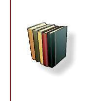
BÖLÜM
EĞİTİM İLETİŞİMİ, YETİŞKİN EĞİTİMİ VE ÖĞRETİM YÖNTEMLERİ
ğını belirlemek üzere değerlendirmeyi nasıl yapacağını, hangi değerlendirme araçlarını kullanacağını planlamalıdır.
Öğrenme-öğretme etkinlikleri planlanırken ve uygulanırken hedef kitle olan öğrenenlerin özellikleri dikkate alınır, ö ğretim sürecinde sırasıyla dikkat çekme (araç-gereçle derse girme, ses tonunu ve beden dilini kullanma, değişik sorular sorma vb.), güdüleme (hedeften haberdar etme, konunun önemini ve ne işe yara-yacağını söyleme), gözden geçirme (öğrencilerin hazıbulunuşluklarını ve konunun önceki konularla bağlantısını belirleme), derse geçiş (konunun işlenişi), bireysel ve grupla öğrenme etkinlikleri, özetleme aşamaları birbirini izlemelidir. Bu aşamaların her biri öğrenme ve öğretme ilkeleri çerçevesinde yürütülmelidir.
KAYNAKÇA
Adler, R.B., Rosenfeld, L.B. and Towne, N., Interplay: The Process of Interpersonal Communication (2nd ed.). Holt, Rinehart and Winston: New York. 1983.
Bolton, R., People Skills, Prentice Hall: London. 1979.
Cole, P.G. and Chan, L.K.S., Teaching Principles and Practice. Prentice Hall. 1994.
Dale, E., Audio-visual Methods in Teaching. Holt, Rinehart and Winston: New York. 1969.
Demirel, Ö., Planlamadan Değerlendirmeye Öğretme Sanatı. Pegem Yayıncılık. Ankara. 1999.
Demirel, Ö., Öğretimde Planlama ve Değerlendirme: Öğretme Sanatı. Pegem Yayıncılık. Ankara. 2004.
Dillon, J.T., Questioning and Teaching: A Manual of Practice. Teachers College Press: New York. 1988.
Geray, C., Halk Eğitimi. İmaj Yayınevi. Ankara. 2000
Gözütok, F.D., Öğretmenliğimi Geliştiriyorum. Genişletilmiş 2. Baskı, Siyasal Kitabe-vi. Ankara. 2004.
Gözütok, F.D., Öğretim İlke ve Yöntemleri. Ekinoks Yayıncılık. Ankara. 2007.
Ergin, A. ve Birol, C., Eğitimde İletişim. Anı Ya y ıncılık. Ankara. 2000.
Ergin, A., Öğretim Teknolojisi İletişim. Pegem. No: 17. Ankara. 1995.
Kemp. J.E., Morrison, G.R. and Ross, S.M., Designing Effective Instruction. Merrill, an Imprint of Prentice Hall. New Jersey. 1996.
Levine, J.M., Secondary Instruction. Allyn and Bacon: Boston. 1989.
Rawlinson, J.G., (Çev. O., Değirmen) Yaratıcı Düşünme ve Beyin Fırtınası. Rota Yayın Ta n ıtım. İstanbul. 1995.
Slavin, R.E., Educational Psychology. Englewood. Cliffs. Prentice Hall: NJ. 1990.
39
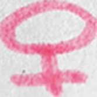
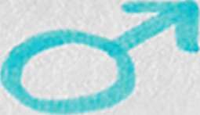
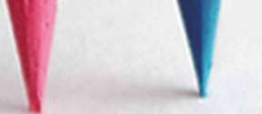

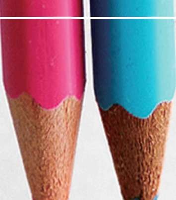
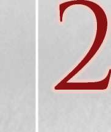
BÖLÜM
KADIN-ERKEK EŞİTLİĞİ Vr TOPLUMSAL C İ NSİ YET
BÖLÜM
KADIN-ERKEK EŞİTLİĞİ
VE TOPLUMSAL CİNSİYET
C
<
1. Giriş
2. Cinsiyet Rolleri
3. Kadın ve Erkeklere Atfedilen Özellikler
4. Kalıp Tipler
r
5. Cinsiyete Dayalı İşbölümü
6. Cinsiyete Dayalı İşbölümü ve Erkeklik
y\
4
7. Cinsiyet Rolleri ve Cinsiyet Eşitsizliği
8. Eğiticiye Notlar
9. Sayılarla Kadının Durumu
J
:
^^^^^^^^^^^^^^^^^^^^^^^^^^^^^^H
2. BÖLÜM: KADIN-ERKEK EŞİTLİĞİ VE TOPLUMSAL CİNSİYET
C3
SÜRE
ÖĞRETİM TEKNİKLERİ
ARAÇ - GEREÇLER
3 Ders saati
Sunuş,buluş ve uygulama
Projeksiyon cihazı,
yoluyla öğretme, Anlatma,
bilgisayar
tartışma, soru-cevap ve
örnek olay
^
^
BAŞVURU KAYNAKLARI
ETKİNLİKLER
İlgili kaynaklar
Örnek olay üzerinde tartışmaları
1. Giri
Günümüz toplumlarında giderek karmaşıklaşan ilişkiler, çeşitlenen ihtiyaçlar ve artan beklentiler karşısında, kamusal hizmetlerin de hem nitelik hem de nicelik olarak değişmesi, kaçınılmaz görünmektedir. Bu değişimin bir boyutu, standartlaştırılmış hizmetlerden, ihtiyaca göre çeşitlendirilmiş hizmetlere doğru olandır.
Toplumun güvenliğinin sağlanması, devlet tarafından sağlanan temel kamu hizmetlerinden biridir. Bu hizmetin yerine getirilmesi, polis organizasyonunun ortaya çıkışından bu yana büyük değişimler geçirmiş, güvenlik hizmetleri çe
şitli defalar yeniden tanımlanmış, hizmet kalitesini artırma yönünde sayısız girişimler olmuştur.
Toplumsal yapıdaki işleyişin değişmesi ve beklenti düzeylerinin giderek artmaya başlaması, toplumla yakın bir ilişki içerisinde bulunan ve güvenliğin sağlanmasından birinci derecede sorumlu olan polisin rolünün de önemli ölçüde değişmesine sebep olmaktadır.
(Arif Kıvrak, Polis Akademisi)
Bütün kamu hizmetlerinde olduğu gibi, güvenlik hizmeti de vatandaşların tek tip olmadıkları, farklı koşullarda yaşadıkları, dolayısıyla farklı ihtiyaçları olabileceği gerçeği dikkate alınarak düzenlenmelidir. Bunun için de toplumun, toplum içindeki bireylerin, bireyler arası ilişkilerin ve kurumların doğru tanımlanması, çözümlenmesi, farklılıkların kavranması, büyük önem taşımaktadır.
Böylelikle hizmetin kalitesi ve verimliliği artacağı gibi, vatandaş-polis ilişkileri de her iki taraf açısından daha sağlıklı hale gelecektir.
41


BÖLÜM
KADIN-ERKEK EŞİTLİĞİ V TOPLUMSAL CİNSİYET
Toplumsal farklılıklardan ve farklı ihtiyaçlardan söz ettiğimizde, ilkin cinsiyet farklılıkları aklımıza gelmektedir. Kadınlar ve erkekler aynı kentte, aynı mahallede yahut aynı evde yaşarken dahi, farklı koşullar içindedirler. Bu nedenle de yalnızca bir cinsiyetin ihtiyaçlarına bakılarak hanenin ya da topluluğun bütününün kapsanması mümkün değildir.
Polis hizmetlerinde kapsamlı bir düzenleme yapabilmenin ilk koşulu, polis rolünün sadece suçlarla mücadele olmadığının, polis organizasyonunda ve vatandaşlar tarafından kabul edilmesidir.
Polisin en önemli rolünün sadece suçları araştırmak olmadığı, aynı zamanda, polise yapılan şikayetlere yanıt vermenin de polisin en önemli görevleri arasında olduğu, tartışılmaz bir gerçektir.
(Yrd.Doç.Dr. Halil İbrahim Bahar, Polis Akademisi)
Kamu hizmetlerinin, ayırım gözetilmeksizin bütün vatandaşlara eşit olarak sağlanması, sosyal bir hukuk devleti olmanın temel ilkelerinden biridir. Ayırım gözetmemek, Anayasamızda da belirtildiği gibi, herkese aynı davranmak de
ğil, herkesin vatandaşlık haklarından yararlanabilmesini sağlamaktır. Bu ilke, 10’uncu maddede düzenlenmiş, 2004 yılında yapılan değişiklikle cinsiyetler arasındaki eşitsizliğin giderilmesi konusu vurgulanmıştır.
Türkiye Cumhuriyeti Anayasası, madde 10:
Herkes dil, ırk, renk, cinsiyet, siyasi düşünce, felsefi inanç, din, mezhep ve benzeri sebeplerle ayırım gözetilmeksizin, kanun önünde eşittir. (Ek: 7.5.2004- 5170/1.md) Kadınlar ve erkekler eşit haklara sahiptir. Devlet, bu eşitliğin yaşama geçmesini sağlamakla yükümlüdür. Hiçbir kişiye, aileye, zümreye veya sınıfa imtiyaz tanınamaz. Devlet organları ve idare makamları bütün işlemlerinde kanun önünde eşitlik ilkesine uygun olarak hareket etmek zorundadırlar.
Bu düzenlemede amaç, haklardan yararlanma bakımından geride kalmış
olanların diğerlerine yetişmesinin desteklenmesi, böylelikle sosyal adaletin sağlanmasıdır. Yani, kamusal hizmetlerin ihtiyaçlara göre çeşitlendirilmesi, Anayasamızda da belirtildiği gibi, vatandaşların haklardan yararlanmada eşit hale getirilmesini hedefler.
Tıpkı, La Fontaine’in “Tilki ve Leylek” öyküsünde olduğu gibi: her ikisinin de karnının doyabilmesi için, içinden yiyebilecekleri biçim ve ölçüde kaplar gerekmektedir. Her ikisine aynı kap verilmesi, birinden birinin aç kalmasına ve huzursuzluk çıkmasına neden olacaktır.
Eğititici eğitimi kitabının bu bölümü, kamusal hizmetlerin planlanmasından yürütülmesine kadar her aşamada dikkate alınması gereken toplumsal farklardan birini, toplumsal cinsiyet farkı ve eşitliği konusunu genel hatlarıyla ele alıyor, tartışıyor.
42


BÖLÜM
KADIN-ERKEK EŞİTLİĞİ VE TOPLUMSAL CİNSİYET
2. Cinsiyet Rolleri
Hepimiz dünyaya kız ya da oğlan bebekler olarak geliriz. Bu bizim seçtiğimiz bir şey değildir. Hangi kültürde, çağda yaşarsak yaşayalım, kız ya da oğlan olarak doğmak, tıpkı ölümlü olmak gibi, biyolojik varlığımızın bir niteliğidir.
Böyle olduğu için, üzerinde düşünmeye gerek duymayız: Öyle ya, nasıl mavi gözlü, uzun boylu yahut siyah saçlı olmak “doğal” durumlarsa, kadın ya da erkek olmak da öyledir. Oysa, biraz daha yakından baktığımızda, cinsiyetin yalnızca biyolojik varlığımızın bir niteliği olmakla kalmadığını, toplumsal konumumuzu da derinden etkilediğini görebiliriz.
Yani, cinsiyetimiz, yalnızca biyolojik bir nitelik olmakla kalmaz, bizim toplumsal varlığımızın da en önemli bileşenlerinden biridir. Kadın ve erkekler için
“uygun görülen” bazı nitelikler vardır: Cesaret, özgüven, güç gibi nitelikler erkeklere, yumuşaklık, fedakârlık, çekingenlik gibi nitelikler ise kadınlara atfedilir.
Cinsiyete göre dağıtılan bu nitelikler, bizim biyolojik varlığımızla ilişkilendirilir.
Yani, cinsiyetin, anatomik ve hormonal yapı tarafından belirlendiği düşünülür.
Örneğin, “kadınlar anne oldukları için erkeklere göre daha yumuşaktır” denir.
Çünkü cinsiyetimiz ile biyolojimizi birbirine en kolay bağlayabileceğimiz nokta
“annelik”tir. Kadınların annelik potansiyelleri nedeniyle “kadınsı” davrandıkları söylenir. Oysa bu potansiyelin tamamen başka türlü toplumsal niteliklere kaynaklık etmesi pekala mümkündür: Bir kadın, anne olduğu için daha yırtıcı, daha korumacı ve sert de olabilir. Bazı kültürlerde bunun örneklerine de rastlarız; örneğin çocukların ataların ruhların yeniden cisimleşmesi olduklarına inanan topluluklar, çocuk bakımını da topluluğun ortak işi olarak tanımlarlar; bu durumda annelik ve babalık rolleri bizim “doğal” kabul ettiğimizden çok farklı biçimlenir.
Avustralya yerlilerinde, “annelik” ve “babalık” temelde biyolojik olmayan, özellikle toplumsal kavramlar olarak görülür. Anne ile çocuk arasında da kan bağı olduğuna ilişkin bir fikir yoktur- aynı şekilde, baba ile çocuk arasında da. Bu gerçeğe pek önem verilmez…
Bizim inanç sistemimiz bize bir çocuğun kendisini taşıyan kadının yumurtasının döllenmesinin ürünü olduğunu söyler -fizyolojik annelik- ama Aborjinler arasında kadın ile “ondan çıkan çocuk”
arasında bu türden temel bir fizyolojik ilişki bilinmez. Kadından doğan çocuğun, o sırada kabilede yaşayan herkesten daha yaşlı olduğuna, çünkü atalardan birinin ya dF bir bilgenin dünyaya yeniden geldiğine inanılır; bu nedenle de bebek, kabileye doğduğu ya da yeniden dünyaya geldiği zamandaki herhangi bir fizyolojik nedenden köken olarak tamamen bağımsız bir varlık olarak kabul edilir.
(Ashley-Montagu, Coming into Being among the Australian Aborigines, 1974) Bizim annelik ile kadınsılık arasında kurduğumuz bağ, gerçekte biyolojiden çok, bizim cinsiyete ilişkin inanç ve değerlerimizden kaynaklanır. Bir başka 43


BÖLÜM
KADIN-ERKEK EŞİTLİĞİ V TOPLUMSAL CİNSİYET
deyişle, kadınlar anne oldukları için fedakâr değiller, kadınların fedakâr olmaları beklendiği için annelik de fedakârlıkla tanımlanmaktadır. Kadınlık ve erkekliğin toplumda nasıl algılandığı, bunlara hangi anlamların yüklendiğini bize gösteren pek çok şey olabilir: Deyimler, atasözleri, halk hikayeleri gibi…
Tabii bunlar yalnızca bizim içinde yaşadığımız (ya da araştırdığımız) toplumun özelliklerini anlamamızı sağlamakla kalmaz, aynı zamanda, kadınlar ve erkekler olarak belirli rol kalıplarına girmemizi de sağlar. Örneğin, “elinin hamuruyla erkek işine karışma!” deyişinin iki farklı işlevi olabilir: Birincisi, bu deyişin geçerli olduğu bir toplumda, kadınların ikincil sayıldıklarını, “erkek işi” olarak tanımlanan karar verme işlerinin dışında bırakıldıklarını gösterir. İkincisi, kadınlara “yerlerini” hatırlatır: hamur yoğurmak ve erkek işlerine karışmamak.
Kadın
1. Dişi cinsten erişkin insan, erkek veya adam karşıtı. 2. Evlenmiş kız 3. eski dilde “bayan” anlamına kullanılan bir unvan: Fatma Kadın… 4. Analık ve ev yönetimi bakımından gereken erdemleri olan 5. mecaz: Hizmetçi.
Dişi
1. Yumurta oluşturan veya yavru doğuran (birey)
2. Hayvan ve bitkilerin, erkeği tarafından döllenecek biçimde oluşmuş cinsi 3. Kadın 4. Kadına özgü 5. Girintili ve çıkıntılı olmak üzere bir çift oluşturan nesnelerin girintilisi 6. Yumuşak, kolay işlenen (maden için)
Erkek
1. İnsan, hayvan ve bitkilerin dişiyi dölleyecek cinsten olanı 2.
Biyolojide, sperma oluşturan organizma 3. Yetişkin adam, kadın karşıtı 4. Koca 5. mecaz: Sözüne güvenilir, mert 6. Girintili ve çıkıntılı olmak üzere bir çift oluşturan nesnelerin çıkıntılısı 7. Sert, kolay bükülmez (maden için)
Geleneksel ifadeler, modern toplumlarda etkisini yitirmiş ve güçsüzleşmiş
gibi görünseler de, farklı biçimlerde varlıklarını sürdürürler. Kadının yumuşak erkeğinse sert olduğu yolundaki eski inanış, günümüzde bir madencilik teriminde varlığını sürdürmektedir. Örneğin: Kolay işlenen madenlere “dişi”, işlenmesi güç olanlarına ise “erkek” denir.
Yani, “kadın” ve “erkek”, cinsiyetlerin isimleri oldukları kadar, o cinsiyetten olan insanlara uygun görülen sıfatlardır da. Biyolojimiz, basitçe bizi kadınlar ve erkekler olarak ikiye ayırmakla kalmaz, uymamız gereken kuralların, içine sığmamız gereken kalıpların ve bize uygun görülen sıfatların olduğu bir dünyaya da sokar bizi- ki artık burada biyolojiden değil, toplumdan ve kültürden söz etmeye başlamamız gerekir.
44

BÖLÜM
KADIN-ERKEK EŞİTLİĞİ VE TOPLUMSAL CİNSİYET
Cinsiyet, doğuştan getirdiğimiz özelliklerimiz kadar, hatta ondan çok daha fazla, dünyada başımıza gelen şeylerle ilişkilidir. Daha biz doğmadan ailemizin beklentileriyle başlar hikayemiz: “Ah” derler, “bir oğlan olsa!” … Oğlanı bulana kadar çocuk yapmaya devam etmek ya da sohbetlerde uzayan bir sessizlik olduğunda “kız doğdu galiba” şakası yapmak ender gördüğümüz şeyler değillerdir. Sonra sıra isim bulmaya gelir. İsimler, ailemizin bizden beklentilerini ve bizimle ilgili umutlarını yansıtırlar. Bu beklenti ve umutları yaşamımız boyunca taşırız; bazen benimseriz, bazen bize yük gelir, ama aşırız. İsimler, sadece ailemizin beklenti ve umutlarını değil, içinde yaşadığımız toplumda değer verilen şeyleri de gösterir.
KIZ
OĞLAN
Çiçek
Arslan
Gül
Pars
Yaprak
Yılmaz
Duygu
Savaş
Sevgi
Hıncal
Gönül
Zeki
Kader
Yaman
Çiçekleri de azmi de seviyoruz, birini kadında, diğerini erkekte! Dünyaya gelişimiz muhtemelen ailemize sevinç verir ama bazılarımızın gelişi biraz daha fazla. Oğlan annesi olmak, pek çok yerde genç gelinin aile içindeki statüsünü yükseltir; tabii “erkek adamın erkek evladı olur” aynı zamanda…
Erkeğin ve Kadının Toplumsal Değeri
Bedevilerin kadınlardan çok erkeklere değer verdiklerinin önemli bir ifadesi, oğlanları kızlara tercih etmeleridir. Erkeklerin de kadınların da ağızlarından “erkekler oğlan yapmak için kadınlarla evlenirler.
Kız çocukları bir işe yaramazlar” gibi laflar çıkar. (…) İnsanlar, oğlanlara kızlardan daha çok sevinirler. Ebelik günlerini anan yaşlı bir kadın, aynı güniçinde iki oğlan çocuğu doğurttuğunu gururla anlatmıştı: “Oğlan doğurmak daha hayırlıdır. Herkes düğün bayram eder. Babasına koşup oğlunun olduğunu söylerler. Eğer kızsa, onu doğuran, doğumda hazır bulunanlar, herkes üzülür. Gidip erkeklere haber vermezler. Yemek yenmez. Hatta çadır yasa boğulur. Eğer oğlansa çadır mutludur, baba mutludur, amcalar mutludurlar ve anne. Onun ne kadar mutlu olduğunu anlatamam!”
(Lila Abu-Lughod, Peçeli Duygular, 2004)
Çocuklar, çok erken yaştan itibaren etrafı keşfetmeyi, küçük maceralar ya
şamayı, düşe kalka öğrenmeyi severler. Araştırmalar gösteriyor ki, erken çocukluk evresinde ailelerin kız ve erkeklere davranışlarında belirgin bir farklılık 45
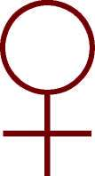


BÖLÜM
KADIN-ERKEK EŞİTLİĞİ V TOPLUMSAL CİNSİYET
var: Kızlara daha koruyucu, erkeklere daha cesaretlendirici (ona boşuna koymamıştık Yaman ismini zaten, değil mi?!). Minik kızların ve minik oğlanların oyuncakları a birbirinden farklıdır: Bebekler, plastik fincanlar, minik mutfak eşyaları bir yanda, arabalar, abancalar, toplar diğer yanda.
Okul çağına gelen bir çocuk, artık cinsiyet kimliğini kazanmıştır; ama yine de işi sıkı tutar, eğitimine devam ederiz. Oğlanı düğün dernek sünnet ederiz, böylece erkekliğiyle gurur duymayı öğrenir (ve erkek olmanın bir bedeli olduğunu!). Kızın kadınlığa geçişi böyle törenle olmaz, bedenin gelişimi onun için doğal bir şeydir; sessizce, utanç ve sıkıntıyla geçer o, hatta bazen annesinden bir tokat yiyerek (kadınlığın bedeli öyle bir seferde ödenip bitmez!). Okul, çocuklar ve ergenler için öğrenme kadar toplumsallaşma yeridir. Babanın gazete okuduğu, annenin mutfakta alıştığı kitaplardan hayatı öğrenirken öğretmenlerin çoğunun kadın ama müdürün neredeyse hep erkek olduğunu da zihninin bir köşesine yazar. Oğlanların terbiyesizliklerinin normal karşılandığını hatta bıyık altından gülündüğünü, kızların sınırları ihlal etme girişimlerine ise hem aileleri hem de öğretmenlerinin dehşetle baktığını fark eder. Birinin hayat bilgisinin kendini gösterme, cesaret, güç ile, diğerininkinin itaat, yumuşaklık ve
“idare etme” ile ilişkili olduğunu sezer.
Günümüzde medya, okul kadar, belki ondan da daha etkili bir öğrenme aracıdır. Çocukluğun ilk dönemlerinden başlayarak, medyanın etkisi altında sosyalleşiriz. Haberlerden reklamlara, dizilerden eğlence programlarına kadar, cinsiyet rollerine ilişkin mesaj bombardımanına tutuluruz. Bu mesajlar bize birkaç hikaye (klişe) anlatır: “Kadınlar kurbandır, erkekler canavar” , bu hikayelerden biridir. Aileiçi şiddet haberlerinde sıklıkla karşımıza çıkan hikaye, budur. Böylece kadına acırken bir yandan da onun edilgenliğini onaylamış
oluruz. Erkek canavardır ama öznedir de aynı zamanda. Bir başkası, “kadınlar fettandır, erkekler saf” hikayesidir. Bu hikayenin kadını özne olmayı becerebil-miştir ama gücünü kötüye kullanmakta, erkeklerin hayatını mahvetmektedir.
Bu hikayedeki erkeğe de acırız ama onun gülünç bir yanı da vardır: Erkeklikle edilgenlik bir arada olmaz çünkü!.. Tabii en çok da şu hikayeleri duyarız: “Mutlu, güzel, başarılı kadınlar, bizim deterjanı kullanırlar”… “Kadınların bayıldıkları erkeklerin altında, bizim arabamız vardır”…
Bu bombardımandan sağ salim çıkmak zordur: Kadın ve erkeklerin nasıl oldukları (ve aynı zamanda nasıl olmaları gerektiği) hakkında kökleşmiş kanaatler ediniriz. Bu kanaatler, ölümcül sonuçlara yol açabilir: Kadınların ince, çok ince, çok çok ince olmaları gerektiğini dinleyen küçük kızlar, yeme bozukluğu hastalıklarına yakalanırlar örneğin. Erkeklerin sert, çok sert, çok çok sert olmaları gerektiğini dinleyen delikanlılar, bir bakarsınız sınıf arkadaşını bıçaklayıvermiş.
Bütün bu isimlendirmeler, beklentiler, onaylamalar ya da cezalandırmalar, çocukların çok küçük yaştan itibaren bir takım kalıplara uygun biçimlenmelerini 46


BÖLÜM
KADIN-ERKEK EŞİTLİĞİ VE TOPLUMSAL CİNSİYET
sağlar. “Kız kalıpları” ya da “erkek kalıpları” diyebiliriz bunlara. Ancak, hatırlatmak gerekir ki, bütün kızlar ya da bütün erkekler için tek bir kalıp yoktur: Yaşanan yere, ailenin durumuna, zengin ya da yoksul olmaya… pek çok şeye göre farklılaşan kalıplar vardır. Örneğin, Şanlıurfa’da yaşayan bir ortaokul öğrencisi kızın içine sığması gereken kalıpla İstanbul’da yaşayan kızınki aynı değildir.
Bu kalıpların hem biçimleri, hem de genişlikleri farklıdır: Kimisi o kadar geniş olabilir ki, içine girmek hiç sorun olmaz ve varlığı fark edilmez; kimisi de o kadar dardır ki, içinde soluk alamayan kız kendini can havliyle dışarı atar… Bu kalıplar, çocuklukta bizi şekillendirmekle kalmaz, hayatımız boyunca değişse-ler de varlıklarını korurlar: İffetli genç kız kalıbı, uysal gelin kalıbı, fedakâr anne kalıbı, cadı kaynana kalıbı… Kimimiz, çeşitli nedenlerle bu kalıplara sığmakta diğerlerinden daha fazla zorluk çekeriz: hayallerimiz vardır, yeteneklerimiz, arzularımız… ya da bazen hayatımızda öyle bir şey olur ki, artık orada duramaz hale geliriz: Biz fedakâr anne/iffetli eş kalıbına uyduğumuz halde kocamız evi geçindiren/aileye kol kanat geren adam kalıbına uymamıştır mesela. Yahut komşunun kızı üniversiteye gitmeyi başarmıştır ve onu gördükçe artık evde çeyiz hazırlamak bize daha zor gelir…
Elbette ki sadece kadınlar için değil, erkekler için de böyle örseleyici, daraltıcı kalıplar vardır. Onlarınki hemen her durumda daha geniştir. Çünkü onlar ne de olsa erkektir! Ama her zaman güçlü olmak, her zaman kararlar vermek, sorumluluk taşımak, namus bekçiliği yapmak… çok kolay olmasa gerektir.
Kadınlar da erkekler de bir yandan bu kalıpların yeniden yeniden üretilmesine katkıda bulunurlar; komşunun gelini çalışıyor diye dedikodu yapmaktan kızını okula göndermemeye kadar pek çok şekilde yaparlar bunu. Bir yandan da bu kalıpların esnemesi, değişmesi için çabalarlar; dedikodulara kulak vermeden çalışmaya giderek ya da okula gidebilmek için Cumhurbaşkanına mektup yazarak.
Cinsiyet kalıpları sadece insanların onları değiştirmesiyle değil, toplumsal koşullara bağlı olarak da değişir. Örneğin otuz yıl önce çok güçlü bir ideal olarak çizilen ev hanımlığı, artık yeni yetişen genç kadınlar için arzu edilen bir şey değildir; onlar meslek sahibi olmayı hayal ederler. Çünkü en azından belirli sektörler için kadın iş gücüne talep vardır, eğitimli kadınları piyasaya çekmek daha uygun görünmektedir.
Medya, bu kalıpların üretilmesinde ve değişmesinde, önemli bir etkendir: ideal tipler yaratarak, bazı tipleri komikleştirerek, hatta bazılarını suçlu/şey-tan göstererek. Reklamlar, dizi filmler, üçüncü sayfa haberleri, bu gözle bakıldığında, revaçta olan kadın ve erkek kalıplarının hangileri olduğuna ilişkin çok fazla ipucu verirler.
47

BÖLÜM
KADIN-ERKEK EŞİTLİĞİ V TOPLUMSAL CİNSİYET
Toplumsal cinsiyet rolleri, bir kültürün cinsiyete atfettiği görevler ve etkinliklerdir. Toplumsal cinsiyet rolleriyle yakından ilişkili bir terim olan toplumsal cinsiyet klişeleri ise, erkek ve kadın karakterlerine ilişkin basitleştirilmiş fakat çok güçlü bir şekilde benimsenmiş
düşünceleri ifade eder. Toplumsal cinsiyet tabakalaşması, kadın ve erkeğin sosyal hiyerarşideki farklı konumlarını yansıtan, sosyal değer atfedilmiş kaynaklar, güç, prestij ve kişisel özgürlük gibi ödüllerin eşitsiz dağılımını anlatır.
(C.P. Kottak, Antropoloji: İnsan Çeşitliliğine Bir Bakış, 2001) Toplumsal cinsiyet, içine doğduğumuz toplum ve kültür tarafından biçimlendirilir.
3. Kadın ve Erkeklere Atfedilen Özellikler
(Toplumsal Cinsiyet Klişeleri)
Kadın
Erkek
Nazik
Kaba
Yumuşak
Sert
Dayanıklı
Dayanıksız
Sabırlı
Sabırsız
Uysal
Dikkafalı
Fedakâr
Bencil
Hesaplı
Hesabını bilmeyen
İçten pazarlıklı
İçi dışı bir
Dar kafalı
Geniş fikirli
Fettan
Kolay kandırılan
Kadın ve erkeğe atfedilen nitelikler kültürden kültüre ve tarih içinde de
ğişimler gösterse de, bazı unsurların değişmediğini söyleyebiliriz. Bunlardan biri, kadınların doğaya erkeklerden daha yakın oldukları fikridir. Anneliğe ve
“ölmeden kanama yeteneğine” bağlı olarak, kadınların erkeklerden daha
“doğal” oldukları varsayılır. Bu nedenle ürkütücü, anlaşılması zor, gizemli görünürler. (İnsanoğlunun bilinç dışını keşfeden Freud, kadınları karanlık bir kıtaya benzetmiş ve sormuştu: Kadınlar ne ister?!) Bu varsayımın bir sonucu, kültürün ve uygarlığın erkeklere, doğanın ise kadınlara ait olduğu fikridir.
Gerçekten de, eski Yunan’dan başlayarak Batı felsefesinin önemli temsilcileri (Aristotales, Pythagoras, Heiddegger, Nietzsche…) uygarlığın bir erkek ürünü olduğunu öne sürmüşlerdi.
48


BÖLÜM
KADIN-ERKEK EŞİTLİĞİ VE TOPLUMSAL CİNSİYET
Evrende, düzeni, ışığı ve erkeği yaratan iyi bir ögeyle karışıklığı, karanlığı ve kadını yaratan kötü bir öge vardır.
Pythagoras
Düzen ve ışık kadar karanlığın da insanlara özgü bir nitelik olduğunu hatırımızdan çıkarmadan, cinsiyetlere atfedilen özelliklerin gerçekten cinsiyetle ilişkili olup olmadığını sorabiliriz: Nezaket, bilgelik, adalet duygusu, özgürlük arzusu… Bunların biyolojiyle ya da anatomiyle bir ilişkisi var mı? Ya hesapçılık, düzenbazlık yahut kabalığın? Üreme organlarındaki ve hormonlarındaki hangi nitelik insanı yalancı yahut dürüst yapar?
İnsan türüne ait niteliklerin ve potansiyellerin her birimizde farklı derecelerde bulunduğunu söyleyebiliriz. Bazen hayatımızın sonuna kadar bu nitelik ve potansiyelleri ortaya çıkarmaya, hatta fark etmeye imkân bulamayız. Tıpkı olağanüstü resim yeteneğini keşfedemeden yaşlanan bir köylü gibi. Daha sık yaşadığımız durum, bazı niteliklerimizin desteklenip yeşertilirken bazılarının bastırılmasıdır.
Kız ve erkek çocukları yetiştirirken, sistematik olarak kimi niteliklerini destekler, kimilerini cezalandırırız: “Ne işin var kız başına senin orda?” “Erkek adam ağlamaz!” “Hadi hanım kızım, ağabeyine su ver”, “oğlum, kardeşine sahip çık”…
Sonra da “kadınlar çekingen”, “erkekler duygularını göstermeyi bilmez” gibi yargılara kolayca varırız. Kendi yaptığımız şeyi doğaya yükleriz yani!
Kadınların “erkeksi” nitelikleri benimsemesi, böyle özellikler göstermesi, belirli sınırlar içinde hoşgörülebilir: “Erkek gibi kadın!” bir övgüdür. Kadının cinsiyetinden beklenmeyecek bir cesaret ya da mertlik gösterdiğini ifade etmiş oluruz bunu söyleyerek. Oysa bir erkeğe “kadın gibi” demek, yapılabilecek en büyük hakaretlerden biridir.
Neden böyle dersiniz?
4. Kalıp Tipler
Kadınlara ve erkeklere atfedilen niteliklerin ailede başlayan bir dizi toplumsallaşma süreci içinde benimsendiğini, bireylerin bu süreçler içinde toplumsal cinsiyet rol kalıplarına girdiklerini söyledik. Kalıp tiplerin bu benimseme ve biçimlenmedeki yerini vurgulayarak devam edelim.
Kalıp tip, “belirli özelliklere sahip en genel model” anlamına gelir. Bütün modeller gibi, kalıp tiplerin de gerçeklikte birebir karşılıkları yoktur, ancak ger-çekliği anlamak için son derece elverişli araçlardır.
Bu tiplerden bazıları zamana dayanıklıdır: Meryem ve Havva gibi. İlki annelik ve masumiyetin sembolüyken, ikincisi baştan çıkarmayı hatırlatır. Bazı kalıp tipler, zamana dayanıklı olanlardan farklı olarak, kısa ömürlüdür: 1980’lerin sert iş kadını kalıp tipi, bunlardan biriydi ve1990’lara gelindiğinde, çoktan geride kalmıştı.
49


BÖLÜM
KADIN-ERKEK EŞİTLİĞİ V TOPLUMSAL CİNSİYET
Kalıp tipler, edebiyat, plastik sanatlar, sinema gibi kaynaklardan beslenirler, günümüzde bunların çok ötesine geçen bir başka kaynağı, medyayı da unutmamalıyız.
Türk edebiyatının unutulmaz Feride’si, klasik bir örnektir. Çalıkuşu Feride, iki başka kalıp tipe alternatif olarak üretilmiş ve yalnızca döneminin kadınları ve erkekleri değil, sonraki kuşaklar üzerinde de etkili olmuştu. Cahil, dar kafalı, ezik kadın ile eğitimli ama yoz kadın tiplerinin karşısında Feride, eğitimli ve iffetli, ilerici ve yerli bir kadın olarak “yeni kadın”ın simgesiydi adeta.
Aynı dönemin iki erkek kalıp tipi, Felatun Bey ile Rakım Efendi idiler. Bunlardan biri alafranga züppeydi, diğeri ise bilgelik ve tevazu örneği. Bu iki tip, Türkiye’nin batılılaşma serüveninde nasıl farklı erkeklik kalıplarının yaratıldı
ğını bize göstermesi bakımından, son derece zihin açıcıdır.
Günümüzün kadın ve erkek kalıp tiplerine baktığımızda, bunların eskisine göre çok daha çeşitlenmiş olduğunu ve ömürlerinin kısaldığını fark ediyoruz.
Medya tarafından yaratılan kalıp tiplere bir kaç örnek verelim:
' “Kurban” kadın: Üçüncü sayfa haberlerinin yarattığı bir kadın tipidir ama kadınlara yönelik gündüz programları, hatta bazen ciddi haber programlarında bile ona rastlayabiliriz. Bu kadının özelliği, cinayete kurban gitmiş, şiddete maruz kalmış, başına olmadık işler gelmiş olmasıdır. Ama onu tanımamız için bu kadarı yetmez; aynı zamanda, bu kadının içinde bulunduğu durumdan kurtulabilmesi için mutlaka biri-lerinin yardımına ihtiyacının olması gerekir. Böylece onun varlığı bizim kendimizi güçlü, merhametli ve “kurtulmuş” hissetmemizi sağlar.
' “Fettan” kadın: Arka sayfa güzeli, fettan kadının billurlaşmış örneği-dir. Bu kadının güzel bedeninden ve davetkâr bakışlarından başka bir özelliği yoktur. Bazen, bir hikaye içinde sunulduğunda, ne kadar tehlikeli, baştan çıkarıcı ve uzak durulması gereken biri olduğunu anlarız: “Kara Melek” gibi!
' “Dişi Kuş”: Yeni çıkan buzdolaplarının, mikrop düşmanı deterjanla-rın, bebek bezlerinin hemen yanında, o vardır. Hayatı neşe içinde çekip çeviren, mutfak tezgahındaki bakterilerden başka bir derdi yokmuş gibi görünen bir tiptir.
Bu kalıp tipler, gerçek hayatta bir karşılıkları olmasa da bizim kadınları sınıflandırmamız, etiketlememizde işlevsel olurlar.
Erkeklerle ilgili kalıp tipler bu kadar güçlü, yaygın ve çeşitlendirilmiş değildir. Rol model olarak sunulan bazı erkekler (Polat Alemdar, Seymen Ağa, vb.), birer kalıp tip olmaktan çok, ideal tiplerdir. Kadın ve erkekler arasındaki bu farkı açıklamak için, konuşan ve bakanlar ın erkek, hakkında konuşulan ve
bakılanlar ın kadın olduğunu hatırlamak gerekir.
50

BÖLÜM
KADIN-ERKEK EŞİTLİĞİ VE TOPLUMSAL CİNSİYET
Bu kalıp tipler, bize kadın ve erkeklerin nasıl olmaları gerektiği, yani cinsiyet rolümüzü oluştururken seçebileceğimiz rotalar hakkında bilgi verirler. Bunu yaparken hem simgesellikten, hem de eylemlilikten yararlanırlar. Böylece onlara baktığımızda, cinsiyet özellikleri yanında cinsiyete dayalı iş bölümünü de görebiliriz. Erkeklerin ve kadınların neyi, nasıl, ne zaman yapacaklarına ilişkin öğrenmelerimizin önemli bir kısmı, bu kalıp tipler tarafından sağlanır.
Kadınlara ve erkeklere atfedilen nitelikler, onlar için öngörülmüş kalıp tipler yalnızca farklı olmakla kalmaz, bunlar değer yargıları da içerirler. İşte bu nedenle, cinsiyet farklılıklarını yalnızca hayatı zenginleştiren bir çeşitlenme olarak düşünemeyiz. Bu farklılık, eşitsizlikle birlikte yürür. Ama farkın eşitsiz-liğe dönüşmesini ele almadan önce tartışmamız gereken bir konu daha var:
Cinsiyete dayalı iş bölümü. Kadın ve erkeklere atfedilen nitelikler yalnızca onların kendilerine ve birbirlerine bakışlarını belirlemez, aynı zamanda yaşamlarını, etkinliklerini de biçimlendirir.
5. Cinsiyete Dayalı İşbölümü
Kadınlar ve erkekler, yani cinsiyetler hakkında düşünmek, tartışmak belirli güçlükler taşır. Bu güçlüklerin başında, cinsiyet konusunun iki farklı düzeyde konuşulabilir olması gelir: Bir yandan kişisel yaşantımızda, annelerimiz, babalarımız, kardeşlerimiz, eşlerimiz ile ilişkilerimizi, gündelik deneyim içinde karşılaştığımız kadın ve erkekleri düşündürür bize. Öte yandan, toplumsal bir gerçeklik olarak “kadın sorunu”nu hatırlatır. Örneğin, kadınların okumaz yaz-mazlıkları erkeklerin çok üstündedir, hem merkezi devlet yönetiminde hem de yerel yönetimlerde temsilleri son derece düşüktür.
Bu iki farklı düzeyden edindiğimiz bilgiler, pek çok durumda birbirini destekler niteliktedir ama bazen de öyle olmaz, o zaman çelişkili bilgilerle baş
etmemiz gerekir. Örneğin kadınlara yönelik şiddetin çok yüksek olduğunu duyarız, diğer yandan, kocasını sömürdüğünü düşündüğümüz bir tanıdığı-mız vardır, şiddete uğrayanın kadın değil kocası olduğu sonucuna varırız…
Üstelik, genellikle yaygın kalıba uyan durumları değil de istisnaları hatırlama, bunlar üzerinde daha fazla düşünme eğiliminde olduğumuz için, şiddet istatistikleri ne derse desin, biz o örneği hatırlayıp “yok” deriz, “durum onların söylediği gibi değil aslında”
Bu nedenle, cinsiyetler hakkında düşünürken en somut ve maddi düzeyi, gündelik yaşamı ve pratik işleri hesaba katmak, her zaman en iyisidir.
Dünyanın her yerinde ve bildiğimiz bütün kültürlerde, kadınlarla erkekler, her şeyden önce yaptıkları işlerle birbirlerinden ayrılırlar. Cinsiyetlerden beklentiler birbirinden çok farklı olabilir, örneğin kimi kültürlerde erkekler şiirle ve estetikle uğraşırken kaba işler kadınlar tarafından yapılır. Ya da kadınların savaşçı özelliklerini yücelten toplumlar vardır. Ama cinsiyetlerin yaptıkları işlerle ayrılması, yani cinsiyete dayalı iş bölümü, bütün toplumların ortak bir özelliğidir. (Bilebildi-ğimiz bütün kültürlerde kadınların ikincil olduğunu da buna eklemeliyiz).
51
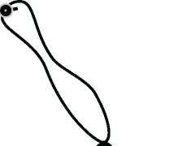

BÖLÜM
KADIN-ERKEK EŞİTLİĞİ V TOPLUMSAL CİNSİYET
Bizim toplumumuzda, kadınlarla erkeklerin yaptıkları işler yaşadıkları ortama göre değişse de, genel kalıp aynıdır: Kadınlar evle ve eve yakın olan işlerle uğraşırlar, erkeklerse toplulukla ve evin dışındaki işlerle.
Cinsiyete dayalı iş bölümüne örnekler düşünelim: Kadınlar ev işlerini yaparlar, çocuklara bakarlar. Ev dışında ücretli çalışıyor bile olsalar, asli işleri her zaman evle ilgili olanlardır. Ne de olsa, “yuvayı dişi kuş yapar”.
Erkekler ise, asıl olarak ailenin geçimini sağlamakla yükümlüdürler. Eşin ve çocukların maddi ihtiyaçlarının karşılanması, onların sorumluluğundadır.
Bunun için ev dışında çalışırlar.
Bu temel iş bölümü, hayatın pek çok alanında tekrarlanır. Örneğin tarım kesiminde, kadın işleri ve erkek işlerine baktığımızda, aynı ayrımı görürüz: Bahçecilik, hayvanların bakımı gibi emek yoğun ve eve yakın işlerde kadınlar, makineli tarımda ise erkekler çalışırlar. Çocukların terbiyesi ve temizliğinden anne, okula gidebilmesinden baba sorumludur.
Kadınların bilinen bütün kültürlerde erkeklere göre ikincil oluşu, yani cinsiyet eşitsizliği, genellikle cinsiyete dayalı iş bölümünün bir sonucu olarak görü
r lür. Yani kadınların ve erkeklerin yaptıkları işlerin farklılaşması, bu farklı işlere farklı değerler yüklenmesi, cinsiyet eşitsizliğinin de temelidir.
Kadınlık, başka şeylerin yanında, “çalışma” ile belirlenir. Tıpkı bulgur öğütmeye yarayan delikli bir taşın işlevselliği nedeniyle sahiplenilmesi gibi, gelinlik Delikli taş
kız da aileye getireceği emek gücü yüzünden, “evde kalmaz”. Bu geleneksel yerde,
deyim, sadece kırsal üretim için değil, toplumun farklı kesimlerinden kadınlar gelinlik kız
için farklı biçimlerde geçerlidir.
evde kalmaz.
Şöyle bir düşünelim: Kadınlar neler yaparlar? Dünyada üretilen gıdanın %
Geleneksel
70’ini üretirler mesela. Başka? İşgücü piyasasında çalışırlar. Ucuz, sorunsuz deyim
bir işgücü kaynağıdırlar. Genç kızlar “çeyiz parası”, kadınlar “harçlık” için çalışırlar. Günde 10 - 12 saat halı dokurlar, örgü örerler, oyuncak parçalarını birbirlerine eklerler, deri dikerler, bilgisayar çipleri üretirler, televizyon tüplerini takarlar… Ama dedik ya, çeyiz parası ya da harçlık için çalıştıkları düşünülür, o yüzden aldıkları ücretler sanki bir “lütuf ”tur, onlara aslında babaları/kocaları bakmaktadır zaten.
Başka neler yaparlar? Kocalarına ve çocuklarına bakarlar. Bu “bakma”nın sınırları çok geniş olabilir: Üstlerini başlarını yıkayıp ütülemek, yemeklerini pişirip bulaşıklarını yıkamak, evi temiz tutmaktan moral bozukluklarına, ergenlik bunalımlarına, yaş dönümü krizlerine, başarısızlık korkularına çareler aramaya kadar uzanan genişlikte bir alan.
Kadınlar aynı zamanda birer sosyal hizmet uzmanıdırlar. Ailedeki özürlü ve yaşlılara, hastalara onlar bakarlar. Bunu yaparken bir destek görmezler ama yapmadıklarında kadınlıktan ne kadar uzak olduklarını söyler herkes, suçluluk duyarlar.
52


BÖLÜM
KADIN-ERKEK EŞİTLİĞİ VE TOPLUMSAL CİNSİYET
Kadınlar halkla ilişkiler uzmanıdırlar. Konu komşuyla, akrabalarla görüş-meleri, ilişkileri ayarlarlar, evlilikleri düzenlerler, yıldönümlerini hatırlarlar, hediyeleri düşünürler.
Kadınlar diplomattırlar. Kendi aileleri ile kocalarının ailesi arasındaki ilişkileri ustalıkla yürütmek zorundadırlar. Kim ne sıklıkla ziyaret edilecek? Kime ne kadar hizmet edilecek? Hangi konuları öteki taraf bilmese daha iyi olur?
Hangi selamlar iletilecek, hangi haberler iletilmeyecek…
Kadınlar piyasa araştırmacılarıdırlar. Neyi nerden almalı? Ucuzluk ne zaman? Hangi gün, günün hangi saatinde pazara gitmeli?
Kadınlar, yaşlandıklarında çok yorgundurlar, öfkelidirler, fiziksel rahatsızlıkları vardır, başkalarını düşünerek geçirdikleri bütün bir ömre baktıklarında hayal kırıklığı duyarlar sık sık. Bu öfke ve içerlemeyi yöneltebilecekleri birini ararlar:
Kocaları, çocukları, en çok da gelinleridir bu kişi. Hayatlarının böyle geçmesi, kadınlığın kaderidir ne de olsa, tıpkı yaşlandığında öfkeli bir cadıya dönüşmek gibi. Madem çocuk doğuruyordur, sonuçlarını da benimsemeli, hiç olmazsa sineye çekmelidir. Sizce de öyle mi?
6. Cinsiyete Dayalı İşbölümü ve Erkeklik
Cinsiyete dayalı iş bölümü, kadınların ikincilleştirilmesinin çok önemli bir aracıdır. Bu sayede pek çok iş, kadınlığın “doğal parçası” gibi görülerek kadınlar tarafından yapılır hale gelir. Bu işler genellikle görünmez ve karşılıksız işlerdir. Ama erkek açısından baktığımızda, erkeklere atfedilen değerlerin ve bu değerlerle bağlantılandırılan iş bölümünün onlar için de pek iç açıcı sonuçları olmadığını görebiliriz.
Her şeyden önce, erkeğin sorumluluklarını hatırlamalıyız: Ailesini geçindirmek, onların güvenliğini sağlamak, geleceklerini garanti altına almak... Bu, genellikle hayat boyu çalışma anlamına gelecek bir sorumluluktur. Bir nedenle çalışamaz, dolayısıyla ailesini geçindiremez duruma düşen erkek, yalnızca yoksullukla değil, aynı zamanda erkeklik rolünü yerine getirememiş olmanın yarattığı eziklikle de boğuşmak zorundadır.
Güç, sorumluluk getirir. Erkekler için de güçlü cins olmanın ağır bir bedeli daha vardır: Güçlü olmaya devam etme gerilimi! Erkeklerin strese bağlı hastalıklara daha sık yakalanmaları, erken teşhis edilmesi gereken hastalıklardan dolayı ölüm oranlarının daha yüksek olması, bu bedelin parçalarıdır. “Erkek adam ağlamaz” diye başlayan hikaye, hastalıkların geçiştirilmesi, gerektiğinde yardım istenememesi, stresle başa çıkmanın becerilememesi ile devam eder. Hekimler arasında yaygın bir deyiş vardır: “Kadınlar hastalanır, erkekler ölür!” Bu deyiş, erkeklik rolünün getirdiği yaşam yükünü çok iyi özetler.
53

BÖLÜM
KADIN-ERKEK EŞİTLİĞİ V TOPLUMSAL CİNSİYET
Bunlar kadar yaşamsal görünmeyen ama belki de birden fazla kuşağı etkilemesi bakımından üzerinde daha fazla durulmayı hak eden bir başka yük, duygular dünyasına uzaklıktan kaynaklanır. İnsan türünün her iki cinsinde de benzer biçimde yaşanan duygular, kadınlar için serbestken erkekler için yasaktır.
Çocuğuna sevgisini göstermemeyi babalığın bir parçası sanan erkek kuşakları sandığımız kadar geride kalmadı! Duygular dünyasına bu uzaklık, insanı insan kılan niteliklerin bazılarının körelmesi anlamına gelir ve yalnızca bireyin kendisi için değil, insanlık için de büyük bir kayıp olarak nitelendirilmelidir.
7. Cinsiyet Rolleri ve Cinsiyet Eşitsizliği
Kadınlarla erkeklerin yaptıkları işlerin farklılığı, onların eşitsizliğinin de temel kaynağıdır. Cinsiyete dayalı iş bölümü, basitçe kadınlarla erkekleri farklı-laştırmaz, aynı zamanda, onları eşitsiz de kılar.
Kadınların yaptıkları işlerle erkeklerinkiler arasındaki farklara baktığımızda, bu eşitsizliği görmemiz kolaylaşır. Farklılıkların başında, emeğin karşılığı-nın olup olmaması gelir. Erkekler, çalışmalarının karşılığında genellikle maddi bir kazanç sağlarken, “kadın işleri”nin karşılığı, ancak manevi olabilir. Bunun sonucunu mülkiyet ve gelire ilişkin rakamlarda görmek çok kolaydır: bütün dünyada özel mülkiyetin %1’i, gelirin ise %10’u kadınlarındır. Rakamlar, onların daha az çalıştığını değil, emeklerinin karşılığını almadıklarını gösterir.
Kadınların yaptıkları işlerin büyük bölümü, ailenin ve evin çevrilmesine ilişkindir. Dolayısıyla, “iş” olarak görülmeyen, yapıldığında değil, ancak yapılmadığında farkına varılan büyük bir iş yığını, “ev kadını” rolünün arkasında gizlidir. Kadınların kendileri bile kendilerini “çalışmıyor” olarak görürler, çünkü yaptıkları şey günbegün tekrarlanması gereken, karşılığı olmayan, görünmeyen bir şeydir.
Bir başka farklılık, yapılan işlerin niteliğine ilişkindir. Bütün bir ailenin günde üç öğün doyurulması, evin temizlenmesi, çamaşırların yıkanması, alışveri
şin yapılması… Bütün bu işler, son derece rutin, bezdirici, kendini tekrarlayan işlerdir ve insanın kendini geliştirmesine bir katkıları yoktur. Üstelik tam da masalda dendiği gibi, ev kadını da “az gider, uz gider, dere tepe düz gider, bir de dönüp arkasına bakar ki, bir arpa boyu yol gitmiş”! Arkasına dönüp baktı-ğında, “işte bunu da ben yaptım” diyebileceği somut bir ürün yoktur.
Toplumsal statü ve gelir getirmeyen, üstelik pek çok durumda varlığı bile fark edilmeyen bir çalışma alanında ömür tüketmeleri, kadınların erkeklerle eşit olmasının önündeki en büyük engeldir.
Yine buna bağlı olarak, ücretli çalışmaya katıldıklarında, ailenin geçiminden sorumlu olmadıkları, sadece “muavin ve müşavir” addedildikleri için, daha düşük ücretlere razı olurlar. Kamu kesiminde, yani eşit işe eşit ücret ilkesinin en güçlü uygulandığı yerde bile, kadınların ve erkeklerin kazandıkları ücretler arasında önemli farklılıklar vardır.
54


BÖLÜM
KADIN-ERKEK EŞİTLİĞİ VE TOPLUMSAL CİNSİYET
Kadınlar, asıl olarak aile ve evle tanımlandıkları için, toplumsal sorunlarla ilgilenmeleri, siyaset yapmaları, hoş karşılanmaz. Yukarıda da belirttiğimiz gibi,
“elinin hamuruyla erkek işine karışma” sözü, bunun bir ifadesidir. Böyle olduğu için de yaşadıkları sorunları dile getirmeleri, çözüm önerileri geliştirmeleri mümkün olmaz. Bu nedenle örneğin aileiçi şiddet gibi çok önemli bir toplumsal sorunun “ailenin iç işi” olarak görülmekten çıkıp kamusal çözümler üretilmesi gereken bir konu olarak görülmesi, ancak son yirmi yılda mümkün olmuştur.
Hareket alanları evle ve mahalleyle, görüştükleri kişiler ise akraba ve kom-şularla sınırlandırılmış kadınların var olan haklarını bilmeleri, kullanmaları da mümkün olmaz. Eğitim ve sağlık hizmetlerinden yararlanmalarının önündeki engellerden biri, budur. Böyle bir kısıtlanma, sadece kadınları değil, erkekleri ve bütün bir toplumu da güçsüz düşürür. Çünkü nüfusun yarısı, üretim gücünü, yaratıcı kapasitesini yeterince kullanamamaktadır.
Bütün bunlar, cinsiyete dayalı iş bölümünün basit bir “alanların ayrılması”
meselesi olmadığını, hem cinsiyet eşitsizliğine hem de toplumsal güçsüzlüğe kaynaklık ettiğini gösterir.
Eşitlik
Eşitlik, bildiğiniz gibi, Fransız Devriminin üç ilkesinden biriydi: Eşitlik, özgürlük, kardeşlik. Bu ilkeler, modern toplumun kurucu ilkeleri oldu.
İnsanların doğuştan getirdikleri bazı nitelikleri sebebiyle diğerlerinden daha üstün ya da aşağı olmayacağını teminat altına alan “eşitlik”
ideali, insanların birlikte yaşamalarının kurallarını belirleyen Toplum Sözleşmesi’nde de yepyeni bir döneme işaret ediyordu. Eşitlik ilkesi hiçbir zaman insanların birbirlerinin “aynı” olması anlamına gelmedi.
Elbette ki yalnızca cinsiyetimiz değil, başka pek çok niteliğimiz nedeniyle de birbirimizden farklıyız ve toplumu toplum yapan da bütün bu farklılıkların getirdiği zenginliktir. Ancak, bütün bu niteliklerimizin bizim diğerlerinden daha fazla (ya da daha az) fırsata sahip olmamıza, seçeneklerimizin bu niteliklere bağlı olarak genişlemesi ya da daralmasına neden olmaması, eşitlikçi bir toplumun vazgeçilmez koşuludur. Yani bir insanın içine doğduğu ailenin diyelim bir ayakkabıcı ya da çiftçi ailesi olması, o insanın zorunlu olarak ayakkabıcılığı ya da çiftçiliği sürdüreceği anlamına gelmez. Modern eğitim, tam olarak bu nedenle “modern”dir ve eşitlikçidir. Aile ve cemaat ilişkileri içinde öğrenme, yerini ulusal eğitime bırakmıştır. Bunun gibi, kadınların da do
ğuştan getirdikleri nitelikler nedeniyle erkeklerden daha üstün ya da daha aşağı bir konuma yerleştirilmesi, erkeklere tanınan fırsatlardan yararlanamaması, engellenmesi, ayrımcılıktır ve eşitliğe aykırıdır.
55

BÖLÜM
KADIN-ERKEK EŞİTLİĞİ V TOPLUMSAL CİNSİYET
Eşitlik Fikrinin Gelişmesi
Bir ideal olarak eşitlik yaygınlıkla benimsense de, gerçekleştirilmesinin çok kolay olmadığı, ortada. Doğuştan eşit haklara sahip olmak ve kanun önünde eşitlik son derece önemli kazanımlar; ancak bu kaza-nımların fiilen eşitliği sağlaması için bazı ek önlemler gerekiyor. Çünkü, fiilen eşit olmayanlara eşit muamele, varolan eşitsizliklerin sürdürülmesini sağlar. Örneğin, anne ve babası okur yazar olmayan, kendisi de altı yaşından itibaren tarlada çalışmaya başlamış bir çocukla kentli ve eğitimli bir ailenin çocuğunun eşit fırsatlara sahip olması için “temel eğitim herkes için zorunlu ve parasızdır” hükmü yeterli olabilir mi? Yoksul olan çocuk çalışmadığı zamanlarda okula gidebilse bile, alacağı eğitimin onu diğeriyle eşit kılması mümkün müdür? Bunun gibi, kadınların erkeklerle eşitliğinin sağlanması için de, her şeyden önce çeşitli alanlardaki eşitsizliklerin farkına varılması, bunların kabul edilmesi, sonra da bu eşitsizlikleri gidermek için önlemler alınması gerekir. İşte, “geçici özel önlemler”, böyle bir mantıkla geliştirilmiştir.
Örneğin “Haydi Kızlar Okula” Kampanyası, yalnızca ideolojik ve politik bir kampanya değil, aynı zamanda yoksul köylü kızlarının eğitim haklarından yararlanabilmesini sağlamaya dönük bir “geçici özel önlem”dir. Çünkü bilinmektedir ki, bu kızlar, erkek yaşıtlarının yaşadı
ğı engellenmelere ek olarak bir de cinsiyetleri nedeniyle okuma hakkından mahrum kalmaktadırlar. Kadınların siyasette erkeklerle eşit biçimde varolabilmeleri için geliştirilmiş kota gibi geçici özel önlemler de benzer biçimde, eşitsiz koşullarda başlayan bir yarışın daha eşit hale getirilebilmesini sağlamayı amaçlar; kadınların kendilerini sistematik olarak dışlayan bir mekanizmaya girebilmelerini mümkün kılar.
Böylece daha fazla sayıda kadının siyasette varolması yoluyla cinsiyet eşitsizliklerine siyasal çözümlerin sağlanması kolaylaşır.
Cinsiyet Eşitliği Ne Demektir?
Cinsiyet eşitliği, en geniş anlamıyla, kadınlarla erkeklerin eşit haklara ve sorumluluklara sahip olmaları anlamına gelir. Türkiye Cumhuriyeti, kuruluşundan bu yana, kadın erkek eşitliğini ve kadınların toplumun her alanında hiçbir kısıtlama ve ayrımcılığa uğramaksızın var olmalarını tartışılmaz ilkeler olarak kabul etmiştir. Yasalar önündeki eşitlik, yani yasalarda cinsiyet ayrımcılığının yapılmamasının eşitliği sağlamaya yeterli olmadığı, özellikle son otuz yılda, bütün dünyada çok farklı kesimler tarafından dile getirilmektedir. Fiilen eşit olmayanlara eşit muamele yapmak, eşitsizliklerin ortadan kalkmasını sağlamaz.
56


BÖLÜM
KADIN-ERKEK EŞİTLİĞİ VE TOPLUMSAL CİNSİYET
Bunun yerine eşitsizlikleri gören, dikkate alan ve düzeltmeye çalışan bir bakış açısına ihtiyaç vardır. Örneğin, temel eğitim bütün Türk vatandaşları için parasız ve zorunludur. Bu kural, kız ve erkek çocuklar arasında bir ayrım yapmaz. Peki, kız ve erkek çocukların temel eğitim fırsatı yönünden eşit olduğunu söylemek mümkün müdür? Hayır.
Okullaşma oranlarına baktığımızda, eğitim düzeyi yükseldikçe kız çocukların oranının azaldığını, eğitimin hiçbir aşamasında eşit olmadı
ğını görüyoruz. Ayrıca, toplam nüfus açısından, okumaz yazmazlığın kadınlarda %20 dolayında, erkeklerde ise %8 civarında olduğunu ekleyebiliriz. Yani, eğitim fırsatlarından yararlanma açısından, yasalar önündeki eşitlik yetmiyor, fiili eşitsizlik sürüyor.
Bir başka örnek, siyasal katılım ve temsil alanından verilebilir. Bilindi
ği gibi, Türkiye’de kadınlar 1934’den beri seçme ve seçilme hakkına sahipler. Bu hakkı dünyanın başka pek çok ülkesindeki hemcinslerinden önce kazandılar. Bu hakkı kazandıktan sonraki ilk seçimlerde, Atatürk’ün de müdahalesi ile, Mecliste %4.2 oranında temsil edildiler.
Aradan geçen yetmiş yılda bu oran çok da değişmedi. Bugün Mecliste kadın milletvekili oranı %9.15’tir, ama daha dün, 2002 - 2007
yılları arasındaki Meclis’te sadece %4.36’ydı. Demek ki, fiilen eşitsiz olanların yasa önünde eşit olması, eşitsizliğin ortadan kalkmasını sağlamıyor. O halde, eşitsizliği ortadan kaldırmak için özel politikalara, önlemlere ihtiyaç var. Atatürk’ün bundan 75 yıl önce görmüş olduğu bu gerçeği bugün hala göremeyenler olsa da, özellikle son 20 yılda, eşitlik yönünde ciddi adımların atıldığını söyleyebiliriz.
Küçük bir Oyun: Kendini Tanıma Penceresi
Kendini tanıma, mutluluğun ve başarının önemli bir koşulu olduğu kadar, insan ilişkilerinde de son derece önemlidir. Kendinizi ne kadar tanıdığınızı test etmek için pencere oyununu kullanabilirsiniz. Kendimizi tanırken, cinsiyetimizin toplumsal ilişkilerde ne kadar önemli bir yer tuttuğunu da fark edebiliriz: Kendi cinsimizden olanlarla açık iletişimimiz daha mı kolay? Hangi durumlarda cinsiyet rollerimiz daha öne çıkıyor, hangilerinde önemsizleşiyor? Başkalarınca bilinmeyen ama kendimizin bildiğimiz şeylerin ne kadarı cinsiyet rolümüze ilişkin? Körlüklerimiz kadın ya da erkek oluşumuzla bağlantılandırılabilir mi? Peki “bilinmeyen” bölgesinin açılmasını sağlayan “aydınlanma anları”nda karşımıza çıkan bilgiler içinde cinsiyet kalıplarına ilişkin sıkıntılarımız var mı?
57


BÖLÜM
KADIN-ERKEK EŞİTLİĞİ V TOPLUMSAL CİNSİYET
Bir dikdörtgen çizin:
Bu dikdörtgen, sizinle ilgili her şeyi temsil etsin. Sonra, bu dikdörtgeni ikiye bölen dikey bir çizgi çizin:
Kendimizce
Kendimizce
bilinenler
bilinmeyenler
Ve bir ayrım daha:
Başkalarının bildikleri
Başkalarının bilmedikleri
Bu iki dikdörtgeni üst üste yerleştirdiğimizde, şöyle bir şey çıkıyor: (1)
(2)
(3)
(4)
Her bölgenin anlamını şöyle açıklayabiliriz:
Birinci bölge: Kendimizle ilgili hem kendimizin, hem de başkalarının bildiği şeyler. Örneğin tatlıya düşkünsek ve bunu başkaları da biliyorsa, bu bilgi birinci bölgede yer alır. Kişilerarası açık iletişimin gerçekleştiği bölge de burasıdır. Yani bu bölge ne kadar genişse, kendimizi o kadar iyi tanıyoruz, başkalarıyla iletişime o kadar açığız demektir.
İkinci bölge: Kendimizde ilgili başkalarının bilip bizim bilmediğimiz şeylerdir. Bazen kendimizle ilgili bir şeyin farkında değilizdir ama başkaları bunu görebilir. Örneğin iş arkadaşımızı kıskanıyoruzdur ama bunu kendimize itiraf edemeyiz. Yakınımızdaki insanlar bu duygumuzun farkına varabilirler. Bu bölgeye “kör bölge” denir, bizim kendimizle ilgili körlüklerimizi ifade etmek için. Üçüncü bölge: Bu bizim bildiğimiz ama başkalarının bilmediği şeylerin, yani sırların bölgesidir. Buraya “gizli bölge” denir.
Dördüncü bölge: Ne bizim ne de başkalarının bildiği özelliklerimiz, buradadır. Henüz keşfetmediğimiz bir yeteneğimiz, ortaya çıkma fırsatı bulamamış bir özelliğimiz… Burası, “bilinmeyen bölge”dir. Bu dört bölge, zaman içinde değişebildiği gibi, farklı ilişkilerde de farklılaşır.
Farklı ilişkiler içinde sizin pencereniz nasıl değişiyor? Açık biri misiniz?
Kendinizi tanıyor musunuz?
58


BÖLÜM
KADIN-ERKEK EŞİTLİĞİ VE TOPLUMSAL CİNSİYET
8. Eğiticiye Notlar
(1) Toplumsal cinsiyet eğitimleri, ne kadar iyi yapılandırılmış olursa olsun, her zaman bazı zorlukları barındırır. Bunların başında gelen, eğitime katılanların deneyimlerinden çıkardıkları “hayat bilgisi”nin kimi zaman yol almayı kolaylaştırması, ama özellikle erkeklerden oluşan gruplarda, zaman zaman bir engele dönüşmesidir. Çok çeşitli toplumsal öğrenme mekaniz-malarından gelen mesajlar “kadının yeri evidir” yahut “kızını dövmeyen dizini döver” türü içeriklerle yüklüyken, kadınlarla erkeklerin farklı ama eşit olduklarını söylemek, bazen akıntıya karşı kürek çekmeye benzer. Bu nedenle, oturumlarda karşınıza çıkabilecek kimi sorunları öngörmek ve muhtemel çözümler geliştirmek, başlarken rahatlatıcı olabilir.
^ Eğitimlerde en sık karşımıza çıkan “hayat bilgisi”, katılımcıların yaşamlarının bir yerinde karşılaşmış oldukları güçlü kadınlara ilişkin bilgidir.
Sıklıkla şöyle şeyler söylediklerini duyarsınız: “Benim babaannem ailedeki herkesi susta durdururdu!”
^ Bir o kadar sık duyacağınız “hayat bilgisi”, gerçekte iktidarın kadınlarda olduğu, ama onların bu iktidarı gizli biçimde, “arkadan dolanarak” kullandıkları için erkeklerin kendilerini güçlü zannettikleridir.
^ Üçüncüsü, kadınların kendilerini ikincilleştiren sisteme entegre oldukları, hatta bu sistemin yeniden üretiminde önemli roller üstlendikleri yolundaki bilgidir: “Anneler kız ve erkek evlatlarına farklı davranıyorlar; kızları kısıtlayan, babalardan önce, anneler!”
Bunlar yanlış değil ama yanlış yorumlanmış bilgilerdir. Kadınların ikincil olduklarını söylemek, onların ezik zavallılar oldukları anlamına gelmez! Elbette ki çeşitli biçimlerde öne çıkan, saygı duyulan, güçlü kadınlar vardır. Kadınlarla erkekler arasındaki eşitsizliği üreten ataerkil sistem, bunu yaparken kadınlardan yardım alır. Kadınlara, belirli kalıplara uymaları karşılığında, belirli güçler verir; bunun adı, literatürde “ataerkil pazarlık”tır: “Beni hayatım boyunca geçindireceksin, yaşlılığımda güvenliğimi sağlayacaksın, karşılığında itaat ve bakım alacaksın.” Klasik ataerkil sistem, böyle bir anlaşma üzerinde durur.
Bu anlaşmanın yürütülmesi, yalnızca erkekler değil, kadınlar tarafından da sağlanır. En çok da yaşlı kadınlar: Anneler ve kayınvalideler. Her birimizin ailesinde ya da çevresinde bu tip “eteği belinde” kadınlar vardır. Onlara baktı
ğımızda, gerçekten de kadınların dar kalıplar içine sıkıştırılmadıklarında ne kadar güçlü olabileceklerini görürüz. Ama gördüğümüz bir şey daha vardır, bu gücün ancak belirli koşullar altında kullanılabildiği, yani bir tür “bağımlı güç”
olduğudur. Çünkü aslında “eteği belinde kadın” da bir kalıp tiptir! Bu kadının gerçekten güçlü olup olmadığını, kalıptan çıkmaya yeltendiğinde görürsünüz.
59


BÖLÜM
KADIN-ERKEK EŞİTLİĞİ V TOPLUMSAL CİNSİYET
Örnek olay
Hatice, çok genç yaşta evlenmiş, arka arkaya üç çocuk sahibi olduktan sonra kocası tarafından terk edilmiş bir kadın. Neyse ki hem kendi ailesi hem de kocasınınki, böyle bir ayrılık sonrasında onu ve çocuklarını desteklemişler, bu sayede Hatice çocuklarını büyük bir zorluk çekmeden büyütebilmiş. Terk edildikten sonra çok acı çekmesine kar
şın, bu acısını dışa vurmamış, çocuklarına yansıtmamış. Akrabaları ve komşuları, onun becerikliliğine, hanımlığına, çocuklarının temizliğine ve ev düzenine hep gıpta etmişler. Zamanla mahallede sözü dinlenen, fikri alınan biri haline gelmiş. Oğluna kız bakanlar, aile içindeki sorunlarla başa çıkamayan kadınlar, turşu kurmaya niyetlenen yeni gelinler, babasıyla tartışan delikanlılar, hep ona danışıyor-larmış.
Kırklı yaşlarının başına geldiğinde, büyük kızını evlendirmiş, oğlunu askere göndermiş ve küçük kızı da çalışmaya başlamış. Bu sırada, Hatice’ye bir arkadaşının kanalıyla bir evlenme teklifi iletilmiş, o da baştan şiddetle reddetmesine karşın, birkaç ay içinde yumuşamış ve talibi ile tanışmaya razı olmuş. Bu tanışma arkadaşlıkla sonuçlanmış.
Hatice hayatında ilk kez beğenilmenin, hoş tutulmanın zevkine varmış. Böylece, evlenmeye karar vermiş. Gelin görün ki, bu kararını ilk açtığı evli kızı, şiddetle tepki göstermiş: “Bu yaştan sonra elin herifine kocam demeye utanmayacak mısın” diye. Hatice düşünmüş, kısa süren evliliği boyunca kocası ile ilişkilerinin ne kadar şiddet dolu oldu
ğunu, kendi mutsuzluğunu hatırlamış. “Ama” demiş kızına, “on beş
yıldır yalnızım, hepiniz kendi hayatlarınızı kuruyorsunuz, ben ne yapacağım?” Kızı öfkeyle söylenmiş: “bizim yüzümüzü yere baktıracaksın-senin artık evlenmeyi değil, torunları düşünmen lazım!”
Sizce Hatice ne yapmıştır?
Ne yapmalıydı?
Hatice güçlü bir kadın mı?
Peki, eşit mi?
(2) Toplumsal cinsiyet eğitimlerinde sıklıkla yaşanan bir başka güçlük, gündelik yaşam deneyimleri ile kamu hizmeti, politikalar, haklar vb. genellikler arasındaki bağlantının kurulmasına ilişkindir. Kadınlık ve erkeklik bireyin en derin deneyimleriyle, benliğiyle, kişisel tarihiyle ilişkili birşey olduğu kadar, toplumsal düzenlemelerin de önemli bir parçasıdır. Örneğin, aileiçi şiddet, genellikle kadın ve erkeklerin “kişisel” sorunu olarak algılanır. Tabii ki böyle bir boyutu da vardır. Oysa aynı zamanda toplumsal bir sorundur, dolayısıyla kamu politikalarının konusu olması gerekir.
“Kişisel” alan ile “toplumsal” alan arasındaki bağlantıyı kurmak için en uygun yol, özelden genele, somuttan soyuta doğru ilerlemektir. Nitekim, Kadına Karşı Şiddetin Önlenmesinde Polisin Rolü ve Uygulanacak Pro-60


BÖLÜM
KADIN-ERKEK EŞİTLİĞİ VE TOPLUMSAL CİNSİYET
sedürler Eğitimi’nde de böyle bir yaklaşım geliştirilmiş, kişisel deneyimlerden toplumsal gerçeklere doğru bir öyküleme yapılmıştır.
(3) Özellikle erkeklerden oluşan gruplarda, konuyu hafife alma eğilimiyle sıklıkla karşılaşılır. Bu, bir yandan gerçekten sorunun çapı ve derinliği ile ilgili bilgisizlikten, bir yandan konunun “kadın sorunları” olduğu, dolayısıyla kendilerini değil kadınları ilgilendirdiği düşüncesinden kaynaklanır. Ama bunlar kadar önemli bir başka şey, bizi rahatsız eden bilgiler karşısında algımızı kapatma eğiliminde olmamızdır. Algıyı kapatmanın pek çok yolundan biri de, konuyu gülünçleştirmek, üzerine şakalar yapmaktır. Böyle bir durumda, ortamın ciddiyetsizleşmesini kişisel bir mesele olarak almayın. En iyisi, belirli sınırlar içinde bu “gevşeme”ye izin vermektir. Pek çok örnekte, böyle bir rahatlamadan sonra devam edilebildiği, katılımcıların açık iletişime daha uygun bir hale geldikleri görülmüştür.
9. Sayılarla Kadının Durumu
Kadınlar, dünyanın her yerinde olduğu gibi, Türkiye’de de toplumsal kaynaklardan erkeklerle eşit biçimde yararlanamıyorlar ve çeşitli alanlarda ayrımcılığa uğruyorlar. Ancak, yine dünyanın her yerinde olduğu gibi Türkiye’de de kadınlar birbirlerinden farklı koşullarda yaşıyorlar. Bu nedenle, tek bir “kadınlık durumu”ndan değil, farklı kadınlık durumlarından söz etmek gerekir. Bu açıdan, cinsiyete bağlı eşitsizliklerin yanı sıra bölgesel ve sektörel eşitsizliklere de dikkatinizi çekmek isteriz.
Nüfus ve Demografi
Toplam Nüfus 67.803.927
Kadın 33.457.192
Erkek 34.346.735
(2000 yılı DİE Genel Nüfus Sayımı)
Doğuşta Beklenen Yaşam Süresi
Kadın 71
Erkek 66.4
(2003 DİE)
Beklenen yaşam süreleri arasındaki farklılık, kadınların biyolojik özelliklerinden kaynaklanmaktadır ve kültürel değişkenler ne olursa olsun, belirli bir toplumda kadınların beklenen ömürlerinin erkeklere göre daha uzun olması beklenir. Ancak dikkatinizi çekmek istediğimiz, toplam nüfustaki farklılıktır.
Beklenen ömürleri daha uzun olan kadınların değil, erkeklerin sayısının daha fazla olmasını nasıl açıklayabilirsiniz?
İdeal çocuk sayısı (evli kadınlar) 2.5
Sahip olunan çocuk sayısı(evli kadınlar) 4.04
(H.Ü. Nüfus Etüdleri Enstitüsü 2003)
6 1


BÖLÜM
KADIN-ERKEK EŞİTLİĞİ V TOPLUMSAL CİNSİYET
Kadın nüfusun erkek nüfusa göre daha az olmasının nedenlerinden birini burada görüyoruz: kadınlar, istediklerinin iki katı kadar doğum yapıyorlar!
Bu demektir ki, yaşamlarındaki temel kararlarda söz sahibi değiller. Bu karar doğrudan kendi bedenleri ile ilgili olsa bile.
Sağlık
Sağlık hizmetlerinden yararlanmak, temel insan haklarından biridir. Bu hakkın kullanılması, insanların toplumsal yaşama katılma yetenekleri açısından büyük önem taşır. Buradaki neden-sonuç ilişkisi, iki yönlü düşünülmelidir, çünkü toplumsal yaşama katılma yetenekleri daha düşük olanlar da (yoksullar, kadınlar, çeşitli azınlıklar...) sağlık hizmetlerinden daha az yararlanırlar.
Bütün dünyada yaygınlaşan yapısal uyum programlarının bir sonucu olarak devletlerin sağlık harcamalarını azaltmaları, öncelikle bu grupları etkiler. Sağlık ve bakım harcamalarının kısılarak bu hizmetlerin özelleştirilmesi, kadınların bunlardan yararlanma imkanlarını azalttığı gibi, bir de onların omzuna ek yüklerin binmesine neden olur.
Türkiye’de kadın sağlığı, asıl olarak “üreme sağlığı” kavramı çerçevesinde ele alınır; yani, kadınlar, annelik rollerinden ayrı düşünülmezler. Ancak, son yıllarda geliştirilen ve Dünya Sağlık Örgütü tarafından da kabul edilen üreme sağlığı anlayışı, sadece üreme sistemleri ve bu sistemlerin işleyişinde bir hastalığı değil, kadının fiziksel, zihinsel ve sosyal açıdan bütünüyle iyi olma durumunu içermektedir.
Yapılan çalışmalar, kadının statüsünün düşük olması ölçüsünde doğurgan-lığının da buna paralel olarak arttığını göstermektedir. Gelişmekte olan 99 ülkede yapılan bir değerlendirmeye göre statüsü iyi olan kadın iki veya daha az sayıda çocuk doğururken, statüsü düşük grup, altı civarında doğum yapmaktadır. Türkiye’de doğurganlık hızı (doğurganlık döneminin sonunda bir kadına düşen canlı doğum sayısı), bölgelere göre büyük bir farklılık göstermektedir: Ege ve Marmara’da 2.0 iken, Doğu ve Güneydoğu Anadolu’da 4.2’dir.
Türkiye’de gebelerin sadece %68’i doğum öncesi bakım almaktadır. Yani her 3 gebeden 1’i, gebeliği boyunca herhangi bir bakım görmemektedir. Bu oran, kadının eğitim durumuna göre farklılık göstermektedir: eğitimsiz kadınların %37.6’sı doğum öncesi bakım alırken, ilkokul mezunu kadınlarda bu oran %76’ya, orta okul mezunu olanlarda %96’ya çıkmaktadır.
Türkiye’de 53 il ve 615 araştırma hastanesinde yapılan bir araştırmaya göre, kadın ölümlerinin %5’i anne ölümüdür. 100 bin canlı doğumda 49.2
olan anne ölüm hızı, gelişmiş ülkelerde 10 ve daha altıdır. Anne ölümlerinin yarısından fazlası, mevcut koşullarda engellenebilir; koşulların biraz düzeltilmesi halinde, anne ölümünü engelleme oranı %81’e çıkar.
Yeni doğan, bebek ve çocuk ölüm hızına bakıldığında, Türkiye’de rakamların çok yüksek olduğu, kız bebeklerin doğum sonrasında daha fazla ihma-62


BÖLÜM
KADIN-ERKEK EŞİTLİĞİ VE TOPLUMSAL CİNSİYET
le uğradığı görülebilir. Bütün dünyada, yenidoğan ölüm hızı erkeklerde daha yüksektir; Türkiye’de de bu rakam erkekler için 32.0, kızlar için ise 23.6’dır.
Ancak, bebek ölüm hızına geldiğimizde, rakamların kızlar aleyhine hızla değiş-tiği, çocuklarda aranın açıldığı görülür:
Erkek Kız
Bebek ölüm hızı
19.2 21.9
Çocuk ölüm hızı
10.4 13.4
Şiddet
Kadın nüfusunun beklenenden az çıkmasının bir nedeni daha var: Kadına yönelik şiddet.
Dünyanın her yerinde olduğu gibi, Türkiye’de de kadına yönelik şiddet ciddi bir sorundur. Ancak hala bu konuda ayrıntılı bir istatistik bulmak mümkün değildir: Türkiye Büyük Millet Meclisi Kadın Erkek Eşitliği Araştırma Komisyonu’nun 1998 yılında yayınladığı rapora göre, evliliğin ilk üç yılında üniversiteli kadınların %73.6’sı, gecekondulu kadınların %90’ı eşlerinden fiziksel şiddet görmektedir. Ancak, örneğin evlilik içi tecavüz, ensest, fiziksel şiddet dışındaki şiddet türlerinin kullanılma sıklığı gibi konularda elimizde yeterli bilgi bulunmamaktadır. Çe şitli kadın kuruluşlarının (Kadın Dayanışma Vakfı, Ka-Mer gibi) ve Aile Araştırma Kurumu’nun yaptığı araştırmalar ancak kısmi bir görüntü vermektedir. Son iki yılda, özellikle namus cinayetleri kamuoyunun gündemine gelmiş ve bu alanda çalışmalar artmıştır. 2007 yılında, Sosyal Hizmetler ve Çocuk Esirgeme Kurumu’na bağlı Kadın Konukevi sayısı 22’ye, toplam yatak kapasitesi ise 300’e ulaşmıştır. Bunun dışında, çeşitli belediyelerin, il özel idarelerinin sığınakları vardır. Sivil toplum kuruluşlarına ait ve kadın ticaretine konu olmuş yabancı uyruklu kadınlara hizmet veren iki sığınak da mevcuttur.
İşgücüne Katılım
Çalışma, ekonomik bir terim olduğu kadar, gündelik hayatımızda da kullandı-ğımız bir sözcüktür. Çalışma dediğimiz zaman genellikle ücret karşılığı çalışmayı kast ederiz. İstatistiklerde görülen rakamlar da bize ücret karşılığı ya da ücretsiz işçilik biçiminde ama ekonomik değer yaratan çalışmayı gösterirler. Yani “kadınların görünmeyen emeği”, istatistiklerde işgücüne katılım (ya da istihdam) rakamları içinde yoktur. Kadınlar kendileri ve aileleri için kullanım değeri olan mal ve hizmetler üretirler; bunları piyasada satmadıkları için, üretimleri ekonomik bir değer olarak görülmez. Ekonomistler, bir tür “armağan” olarak gördükleri bu karşılıksız çalışmanın milli gelir hesaplarına dahil edilmesi halinde, ekonomik görünümün tamamen değişeceği konusunda hemfikirdirler.
63


BÖLÜM
KADIN-ERKEK EŞİTLİĞİ V TOPLUMSAL CİNSİYET
İşgücüne katılım, kadın ve erkeklerin sadece bugünlerini değil, yarınlarını da belirleyecek önemdedir.
Sosyal güvenlik kuruluşlarının istatistiksel verileri bu yarınların nasıl şekil-lendiğine ilişkin ipuçları veriyor:
2004 yılı Emekli Sandığı rakamları
Kadın
Erkek
Toplam
Aktif
776.352
.627.739
2.404.09 1
sigortalı
Pasif sigortalı
734. 96
821. 41
1.555.337
2003 yılı 3. dönemi SSK rakamları
Kadın
Erkek
Toplam
Aktif
.261.552
4.8 5. 53
6.076.705
sigortalı
Pasif sigortalı
464.632
2.292.9 1 1
2.757.543
2004 yılı Bağ-Kur rakamları
Kadın
Erkek
Toplam
Aktif
366.714
3.082.304